PlatypusV3
Alexander Yermanos, Victor Kreiner, Andreas Agrafiotis
2021-08-02
Source:vignettes/PlatypusV3.Rmd
PlatypusV3.Rmd1. Introduction
Platypus is a package designed to facilitate the analysis of single-cell immune repertoire sequencing experiments. The package can be used to separately analyze gene expression (GEX) or immune receptor repertoire (VDJ) sequencing data, in addition to integrating the two data sets to combine phenotypic features with repertoire analysis. The package is designed to primarily analyze the output from 10x genomics cellranger (output from count for GEX and VDJ for enriched immune receptor libraries). The functions could work with other barcode-based scSeq technologies assuming the input columns are added correctly. The gene expression analysis relies heavily upon Seurat, a commonly used R package for single-cell sequencing (scSeq). The core software can be found at https://github.com/alexyermanos/Platypus and examples of use can be found in the publication https://doi.org/10.1093/nargab/lqab023
Current functions in development can be found at the functions branch of the github https://github.com/alexyermanos/Platypus/tree/Functions/R
2. Installation (Platypus v3)
Due to the recent changes of the default clonotyping strategy in Cellranger (version 5 and version 6) we are currently rebuilding v3 of Platypus to revolve around the VDJ_GEX_matrix function (vgm for short). This function integrates both repertoire and transcriptome information and will serve as the input to all secondary functions in future iterations of the package. The advantage of this is having all repertoire and transcriptome information at a per-cell level.
The change in clonotyping can be found here - https://support.10xgenomics.com/single-cell-vdj/software/pipelines/latest/algorithms/clonotyping
The VDJ_GEX_matrix function will soon be found in the newest version of the R package (v3.0) with special thanks to Victor Kreiner. The current functions and documentation can be found already at https://github.com/alexyermanos/Platypus/blob/Functions/R/VDJ_GEX_matrix.R All other functions are already or in the process of being updated. A function which is available for V3 as a new parameter “platypus.version” which can be set to either “v2”, for backcompatibility or “v3”. Some new functions are only compatible with “v3”
Can stay tuned for updates https://twitter.com/AlexYermanos
### Removing any previous versions of the package
#First can ensure that there is no previous version installed locally
#detach("package:Platypus", unload=TRUE)
#remove.packages("Platypus")
### Packages most frequently imported
#install.packages("Tidyverse")
#install.packages("Biostrings")
#install.packages("jsonlite")
#install.packages("seqinr")
#install.packages("Seurat")
### Downloading and installing Platypus
# First we need to download the most recent version from the master branch at https://github.com/alexyermanos/Platypus we can install the package using the following command.
# WARNING: This needs to be replaced with your own directory where the downloaded package is found
# For MacOS users it may look like this
#install.packages("~/Downloads/Platypus_3.1.tar.gz", repos = NULL, type="source")
# For windows it will likely look something like this.
# WARNING: You will need to replace 'YourPCName' with your user name for the windows account in the directory.
#install.packages("C:/Users/YourPCName/Downloads/Platypus_3.1.tar.gz", repos = NULL, type="source")
# Now we can load the installed package into the R environment. In case of problems with installing other R packages that are used in Platypus, please see the README file at the https://github.com/alexyermanos/Platypus, where we outline how to install the other R packages for both Windows and MacOS.
#library(Platypus)
# The individual R functions can additionally be found on the github in the Functions branch. Within this branch, there is a folder "R" which contains the individual functions. This can similarly be downloaded and loaded into the R environment in case not all functions are desired. These functions are actively updated and may include more features than the in original tar.gz file. 3. Extracting and integrating repertoire data with VDJ_GEX_matrix (Platypus v3)
### Downloading the test data for VDJ_GEX_matrix
# While the Platypus manuscript uses the COVID-19 data, the vignette for Platypus v3 will use the data from B cells in the aged CNS, which can be found at the following link https://polybox.ethz.ch/index.php/s/fxQJ3NrRSwiPSSo This small dataset contains VDJ (separate libraries for B) and GEX libraries from the central nervous system of two murine samples. More information can be found https://doi.org/10.1098/rspb.2020.2793
# After downloading the zip file named "Platypus_CNS_data.zip", please unzip the file and find the path to the newly formed folder. Typically this will be in the Downloads folder, so the code below should work on MacOS. For windows please uncomment the code and change the user name to match your PC.
VDJ.out.directory.list <- list() ### Set directory to the outs folder of cellranger vdj
VDJ.out.directory.list[[1]] <- c("~/Downloads/Platypus_CNS_data/VDJ_S1/")
VDJ.out.directory.list[[2]] <- c("~/Downloads/Platypus_CNS_data/VDJ_S2/")
GEX.out.directory.list <- list() ### Set directory to the outs folder of cellranger count
GEX.out.directory.list[[1]] <- c("~/Downloads/Platypus_CNS_data/GEX_S1/")
GEX.out.directory.list[[2]] <- c("~/Downloads/Platypus_CNS_data/GEX_S2/")
# For windows:
#VDJ.out.directory.list[[1]] <- c("C:/Users/YourPCName/Downloads/PlatypusTestData/Patient1_GEX")
#VDJ.out.directory.list[[2]] <- c("C:/Users/YourPCName/Downloads/PlatypusTestData/Patient2_GEX")
# We will call the output vgm (short for Vdj_Gex_Matrix) - this object can be supplied as input to downstream functions in v3 of the package.
vgm <- VDJ_GEX_matrix(VDJ.out.directory.list = VDJ.out.directory.list,
GEX.out.directory.list = GEX.out.directory.list,
GEX.integrate = T,
VDJ.combine = T,
integrate.GEX.to.VDJ = T,
integrate.VDJ.to.GEX = T, #This will adjunct the VDJ information as metadata to the GEX object
exclude.GEX.not.in.VDJ = F,
filter.overlapping.barcodes.GEX = T,
filter.overlapping.barcodes.VDJ = T,
exclude.on.cell.state.markers = c("CD3E"), #Exclude T cells from this analysis
get.VDJ.stats = T,
parallel.processing = "none", #see note at the end of this chunk
trim.and.align = F,
group.id = c(1,2))## Warning: The default method for RunUMAP has changed from calling Python UMAP via reticulate to the R-native UWOT using the cosine metric
## To use Python UMAP via reticulate, set umap.method to 'umap-learn' and metric to 'correlation'
## This message will be shown once per session
## The output will be a list -
# vgm[[1]] corresponds to the VDJ master dataframe
# vgm[[2]] corresponds to the GEX in the form of a seurat object
# vgm[[3]] corresponds to the output of VDJ_stats subfunction - which provides information about the number of chains, sequencing reads, etc
# vgm[[4]] holds the input parameters
# vgm[[5]] holds the sessionInfo output at the time of function call
## Setting trim.and.align to TRUE will provide full-length VDJ and VJ sequences but also increase run time significantly. Alignment is done via Biostrings::pairwiseAlignment(). Gap opening and extension costs can be adapted
## This function can similarly be used when only VDJ or GEX data is present. Simply do only provide the path list of either GEX or VDJ
# VDJ_comb_gex <- VDJ_GEX_matrix(VDJ.out.directory.list = VDJ.out.directory.list,
# GEX.integrate = F,
# VDJ.combine = T,
# integrate.GEX.to.VDJ = F,
# integrate.VDJ.to.GEX = F,
# exclude.GEX.not.in.VDJ = F,
# filter.overlapping.barcodes.GEX = F,
# filter.overlapping.barcodes.VDJ = F,
# get.VDJ.stats = F,
# parallel.processing = "none",
# trim.and.align = T,
# gap.opening.cost = 10,
# gap.extension.cost = 4
# group.id = c(1,2))Note on parallel processing: Parallel processing is provided by the Parallel package via parlapply (for Windows) and mclapply (for MAC). We reccomend using either options only > 5000 cells. If your machine does not support parallel processing e.g. for compatibility reasons, parlapply may be slower than conventional lapply, which is used when “none” is specified for the argument parallel.processing
We can briefly look at the datastructure
## [1] "barcode" "sample_id" "group_id" "clonotype_id_10x"
## [5] "celltype" "Nr_of_VDJ_chains"
## By setting integrate.GEX.to.VDJ and integrate.VDJ.to.GEX to T, VDJ and GEX information will be found in vgm[[1]] and vgm[[2]] objects.
# For example, the seurat-determined cluster is attached to each cell in the VDJ library by
head(vgm[[1]]$seurat_clusters)## [1] <NA> 3 0 0 0 0
## Levels: 0 1 2 3 4 5 6 7
# which corresponds to cells with the following VDJ_cdr3
head(vgm[[1]]$VDJ_cdr3s_aa)## [1] "CARIGYAMDYW" "CARDFTTVVARGYFDVW" "CARGITTVVAYYYAMDYW"
## [4] "CTTGPYDYYAMDYW" "CARPHDYDGVDYW" "CARRYYSNYAWFAYW"
# an NA indicates that the cell barcode in the VDJ library was not detected in the GEX object (or was filtered out, depending on mitochondrial gene limits, etc)Importantly, all samples are integrated in one vgm. Basic stats can be retrieved from the VDJ_GEX_stats output which was run as part of the VGM function (get_VDJ_stats = T)
print(vgm[[3]]) ## Repertoir path
## VDJ.stats ~/Downloads/Platypus_CNS_data/VDJ_S1/
## VDJ.stats1 ~/Downloads/Platypus_CNS_data/VDJ_S2/
## Sample name Nr unique barcodes
## VDJ.stats ~/Downloads/Platypus_CNS_data/VDJ_S1/ 78
## VDJ.stats1 ~/Downloads/Platypus_CNS_data/VDJ_S2/ 160
## Nr barcodes is_cell Nr cells 1VDJ 1VJ Nr cells 1VDJ 0VJ
## VDJ.stats 78 0 0
## VDJ.stats1 160 0 0
## Nr cells 0VDJ 1VJ Nr cells 2 or more VDJ 1VJ
## VDJ.stats 0 0
## VDJ.stats1 0 0
## Nr cells 1VDJ 2 or more VJ Nr cells 2 or more VDJ 2 or more VJ
## VDJ.stats 0 0
## VDJ.stats1 0 0
## Nr cells full_length Nr cells productive Nr cells high_confidence
## VDJ.stats 78 78 78
## VDJ.stats1 160 160 160
## Nr cells all true Nr cells all true and 1VDJ 1VJ Nr clonotypes
## VDJ.stats 78 0 73
## VDJ.stats1 160 0 129
## Nr clonotypes 1VDJ 1VJ Nr clonotypes < 1VDJ 1VJ
## VDJ.stats 58 8
## VDJ.stats1 94 25
## Nr clonotypes > 1VDJ 1VJ % Nr unique barcodes % Nr barcodes is_cell
## VDJ.stats 7 100 100
## VDJ.stats1 10 100 100
## % Nr cells 1VDJ 1VJ % Nr cells 1VDJ 0VJ % Nr cells 0VDJ 1VJ
## VDJ.stats 0 0 0
## VDJ.stats1 0 0 0
## % Nr cells 2 or more VDJ 1VJ % Nr cells 1VDJ 2 or more VJ
## VDJ.stats 0 0
## VDJ.stats1 0 0
## % Nr cells 2 or more VDJ 2 or more VJ % Nr cells full_length
## VDJ.stats 0 100
## VDJ.stats1 0 100
## % Nr cells productive % Nr cells high_confidence % Nr cells all true
## VDJ.stats 100 100 100
## VDJ.stats1 100 100 100
## % Nr cells all true and 1VDJ 1VJ % Nr clonotypes
## VDJ.stats 0 100
## VDJ.stats1 0 100
## % Nr clonotypes 1VDJ 1VJ % Nr clonotypes < 1VDJ 1VJ
## VDJ.stats 79.5 11
## VDJ.stats1 72.9 19.4
## % Nr clonotypes > 1VDJ 1VJ Estimated.Number.of.Cells
## VDJ.stats 9.6 78
## VDJ.stats1 7.8 160
## Mean.Read.Pairs.per.Cell
## VDJ.stats 272,337
## VDJ.stats1 114,292
## Number.of.Cells.With.Productive.V.J.Spanning.Pair
## VDJ.stats 69
## VDJ.stats1 132
## Number.of.Read.Pairs Valid.Barcodes Q30.Bases.in.Barcode
## VDJ.stats 21,242,313 96.5% 91.7%
## VDJ.stats1 18,286,818 96.7% 91.9%
## Q30.Bases.in.RNA.Read.1 Q30.Bases.in.RNA.Read.2 Q30.Bases.in.UMI
## VDJ.stats 73.3% 79.8% 91.0%
## VDJ.stats1 73.2% 79.8% 91.1%
## Reads.Mapped.to.Any.V.D.J.Gene Reads.Mapped.to.IGH
## VDJ.stats 82.6% 26.3%
## VDJ.stats1 82.0% 30.4%
## Reads.Mapped.to.IGK Reads.Mapped.to.IGL
## VDJ.stats 29.4% 27.0%
## VDJ.stats1 30.3% 21.3%
## Mean.Used.Read.Pairs.per.Cell Fraction.Reads.in.Cells
## VDJ.stats 36,548 79.0%
## VDJ.stats1 29,068 74.6%
## Median.IGH.UMIs.per.Cell Median.IGK.UMIs.per.Cell
## VDJ.stats 11 30
## VDJ.stats1 7 12
## Median.IGL.UMIs.per.Cell Cells.With.Productive.V.J.Spanning.Pair
## VDJ.stats 47 88.5%
## VDJ.stats1 8 82.5%
## Cells.With.Productive.V.J.Spanning..IGK..IGH..Pair
## VDJ.stats 80.8%
## VDJ.stats1 71.2%
## Cells.With.Productive.V.J.Spanning..IGL..IGH..Pair
## VDJ.stats 9.0%
## VDJ.stats1 11.9%
## Paired.Clonotype.Diversity Cells.With.IGH.Contig
## VDJ.stats 69.14 98.7%
## VDJ.stats1 80 93.8%
## Cells.With.IGK.Contig Cells.With.IGL.Contig
## VDJ.stats 91.0% 38.5%
## VDJ.stats1 82.5% 38.1%
## Cells.With.CDR3.annotated.IGH.Contig
## VDJ.stats 98.7%
## VDJ.stats1 91.9%
## Cells.With.CDR3.annotated.IGK.Contig
## VDJ.stats 82.1%
## VDJ.stats1 78.8%
## Cells.With.CDR3.annotated.IGL.Contig
## VDJ.stats 11.5%
## VDJ.stats1 13.8%
## Cells.With.V.J.Spanning.IGH.Contig
## VDJ.stats 98.7%
## VDJ.stats1 93.1%
## Cells.With.V.J.Spanning.IGK.Contig
## VDJ.stats 89.7%
## VDJ.stats1 81.2%
## Cells.With.V.J.Spanning.IGL.Contig Cells.With.Productive.IGH.Contig
## VDJ.stats 16.7% 98.7%
## VDJ.stats1 17.5% 90.6%
## Cells.With.Productive.IGK.Contig Cells.With.Productive.IGL.Contig
## VDJ.stats 80.8% 10.3%
## VDJ.stats1 78.8% 13.8%
## rep_id Estimated.Number.of.Cells Mean.Reads.per.Cell
## VDJ.stats 1 303 819,292
## VDJ.stats1 2 261 919,694
## Median.Genes.per.Cell Number.of.Reads Valid.Barcodes
## VDJ.stats 1,199 248,245,523 83.2%
## VDJ.stats1 970 240,040,317 82.8%
## Sequencing.Saturation Q30.Bases.in.Barcode Q30.Bases.in.RNA.Read
## VDJ.stats 99.1% 97.7% 92.3%
## VDJ.stats1 98.8% 97.8% 89.9%
## Q30.Bases.in.UMI Reads.Mapped.to.Genome
## VDJ.stats 97.5% 90.7%
## VDJ.stats1 97.6% 83.1%
## Reads.Mapped.Confidently.to.Genome
## VDJ.stats 85.4%
## VDJ.stats1 77.3%
## Reads.Mapped.Confidently.to.Intergenic.Regions
## VDJ.stats 10.7%
## VDJ.stats1 15.0%
## Reads.Mapped.Confidently.to.Intronic.Regions
## VDJ.stats 9.7%
## VDJ.stats1 10.2%
## Reads.Mapped.Confidently.to.Exonic.Regions
## VDJ.stats 65.0%
## VDJ.stats1 52.0%
## Reads.Mapped.Confidently.to.Transcriptome
## VDJ.stats 61.5%
## VDJ.stats1 49.1%
## Reads.Mapped.Antisense.to.Gene Fraction.Reads.in.Cells
## VDJ.stats 12.7% 84.2%
## VDJ.stats1 12.9% 59.7%
## Total.Genes.Detected Median.UMI.Counts.per.Cell rep_id
## VDJ.stats 14,652 2,865 1
## VDJ.stats1 14,033 1,966 2Moreover, given the many parameters of the VGM function is may be useful to check back on runtime parameters. These, as well as session info are also saved in the vgm object
print(vgm[[4]]) #Runtime params## VDJ.out.directory.list
## "~/Downloads/Platypus_CNS_data/VDJ_S1/ ; ~/Downloads/Platypus_CNS_data/VDJ_S2/"
## GEX.out.directory.list
## "~/Downloads/Platypus_CNS_data/GEX_S1/ ; ~/Downloads/Platypus_CNS_data/GEX_S2/"
## VDJ.combine
## "TRUE"
## GEX.integrate
## "TRUE"
## integrate.GEX.to.VDJ
## "TRUE"
## integrate.VDJ.to.GEX
## "TRUE"
## exclude.GEX.not.in.VDJ
## "FALSE"
## filter.overlapping.barcodes.GEX
## "TRUE"
## filter.overlapping.barcodes.VDJ
## "TRUE"
## exclude.on.cell.state.markers
## "CD3E"
## get.VDJ.stats
## "TRUE"
## numcores
## "1"
## trim.and.align
## "FALSE"
## select.excess.chains.by.umi.count
## "FALSE"
## gap.opening.cost
## "10"
## gap.extension.cost
## "4"
## parallel.processing
## "none"
## integration.method
## "scale.data"
## VDJ.gene.filter
## "TRUE"
## mito.filter
## "20"
## norm.scale.factor
## "10000"
## n.feature.rna
## "0"
## n.count.rna.min
## "0"
## n.count.rna.max
## "Inf"
## n.variable.features
## "2000"
## cluster.resolution
## "0.5"
## neighbor.dim
## "1;2;3;4;5;6;7;8;9;10"
## mds.dim
## "1;2;3;4;5;6;7;8;9;10"
## subsample.barcodes
## "FALSE"
## group.id
## "1;2"
print(vgm[[5]]) #session info## R version 4.0.5 (2021-03-31)
## Platform: x86_64-w64-mingw32/x64 (64-bit)
## Running under: Windows 10 x64 (build 19042)
##
## Matrix products: default
##
## locale:
## [1] LC_COLLATE=German_Germany.1252 LC_CTYPE=German_Germany.1252
## [3] LC_MONETARY=German_Germany.1252 LC_NUMERIC=C
## [5] LC_TIME=German_Germany.1252
##
## attached base packages:
## [1] stats graphics grDevices utils datasets methods base
##
## other attached packages:
## [1] dplyr_1.0.7
##
## loaded via a namespace (and not attached):
## [1] useful_1.2.6 Seurat_4.0.3 Rtsne_0.15
## [4] colorspace_2.0-2 deldir_0.2-10 seqinr_4.2-8
## [7] ellipsis_0.3.2 ggridges_0.5.3 rprojroot_2.0.2
## [10] fs_1.5.0 spatstat.data_2.1-0 leiden_0.3.8
## [13] listenv_0.8.0 ggrepel_0.9.1 RSpectra_0.16-0
## [16] fansi_0.5.0 codetools_0.2-18 splines_4.0.5
## [19] cachem_1.0.5 knitr_1.33 polyclip_1.10-0
## [22] ade4_1.7-17 jsonlite_1.7.2 ica_1.0-2
## [25] cluster_2.1.2 png_0.1-7 uwot_0.1.10
## [28] spatstat.sparse_2.0-0 shiny_1.6.0 sctransform_0.3.2
## [31] compiler_4.0.5 httr_1.4.2 assertthat_0.2.1
## [34] SeuratObject_4.0.2 Matrix_1.3-4 fastmap_1.1.0
## [37] lazyeval_0.2.2 later_1.2.0 htmltools_0.5.1.1
## [40] tools_4.0.5 igraph_1.2.6 gtable_0.3.0
## [43] glue_1.4.2 RANN_2.6.1 reshape2_1.4.4
## [46] Rcpp_1.0.6 scattermore_0.7 jquerylib_0.1.4
## [49] pkgdown_1.6.1.9001 vctrs_0.3.8 nlme_3.1-152
## [52] lmtest_0.9-38 xfun_0.24 stringr_1.4.0
## [55] globals_0.14.0 mime_0.11 miniUI_0.1.1.1
## [58] lifecycle_1.0.0 irlba_2.3.3 goftest_1.2-2
## [61] future_1.21.0 MASS_7.3-54 zoo_1.8-9
## [64] scales_1.1.1 spatstat.core_2.2-0 ragg_1.1.3
## [67] promises_1.2.0.1 spatstat.utils_2.2-0 parallel_4.0.5
## [70] RColorBrewer_1.1-2 yaml_2.2.1 memoise_2.0.0
## [73] reticulate_1.20 pbapply_1.4-3 gridExtra_2.3
## [76] ggplot2_3.3.5 sass_0.4.0 rpart_4.1-15
## [79] stringi_1.6.2 desc_1.3.0 BiocGenerics_0.36.0
## [82] rlang_0.4.10 pkgconfig_2.0.3 systemfonts_1.0.2
## [85] matrixStats_0.59.0 evaluate_0.14 lattice_0.20-44
## [88] tensor_1.5 ROCR_1.0-11 purrr_0.3.4
## [91] patchwork_1.1.1 htmlwidgets_1.5.3 cowplot_1.1.1
## [94] tidyselect_1.1.1 parallelly_1.26.1 RcppAnnoy_0.0.18
## [97] plyr_1.8.6 magrittr_2.0.1 R6_2.5.0
## [100] generics_0.1.0 DBI_1.1.1 mgcv_1.8-36
## [103] pillar_1.6.1 fitdistrplus_1.1-5 abind_1.4-5
## [106] survival_3.2-11 tibble_3.1.2 future.apply_1.7.0
## [109] crayon_1.4.1 KernSmooth_2.23-20 utf8_1.2.1
## [112] spatstat.geom_2.2-0 plotly_4.9.4.1 rmarkdown_2.9
## [115] grid_4.0.5 data.table_1.14.0 digest_0.6.27
## [118] xtable_1.8-4 tidyr_1.1.3 httpuv_1.6.1
## [121] textshaping_0.3.5 munsell_0.5.0 viridisLite_0.4.0
## [124] bslib_0.2.5.14. Gene expression analysis (Platypus v3)
The vgm object now contains all information needed for both V(D)J and gene expression analysis. In the examples below we first focus on gene expression
We can visualize the 2D plots for each sample individually. By default, UMAP, PCA, and TSNE embeddings are included in the object. Here it is important to supply the seurat object in vgm[[2]]. For the parameter group.by we supply “sample_id” to color points by the entry in their sample id column
# In Platypus version 2, the output from GEX_automate was used as input to other GEX functions. These functions are still compatible with v3 if the vgm[[2]] seurat object is supplied as input.
# For example, the following function can be used to calculate the DE genes for each cluster, as before.
Seurat::DimPlot(vgm[[2]],reduction = "umap", group.by = "sample_id")
Seurat::DimPlot(vgm[[2]],reduction = "pca", group.by = "sample_id")
Seurat::DimPlot(vgm[[2]],reduction = "tsne", group.by = "sample_id")
#alternatively plot each sample separately
Seurat::DimPlot(vgm[[2]],reduction = "umap", split.by = "sample_id")
#this also works with any other column of vgm[[2]]@meta.data
Seurat::DimPlot(vgm[[2]],reduction = "umap", split.by = "group_id")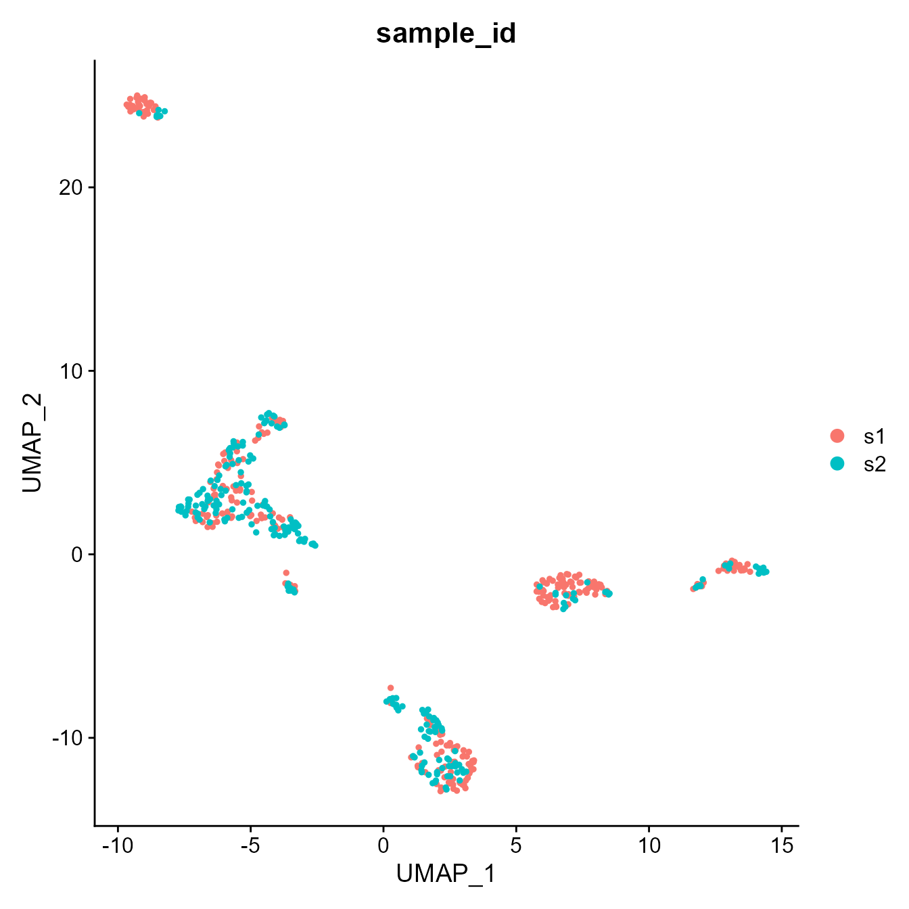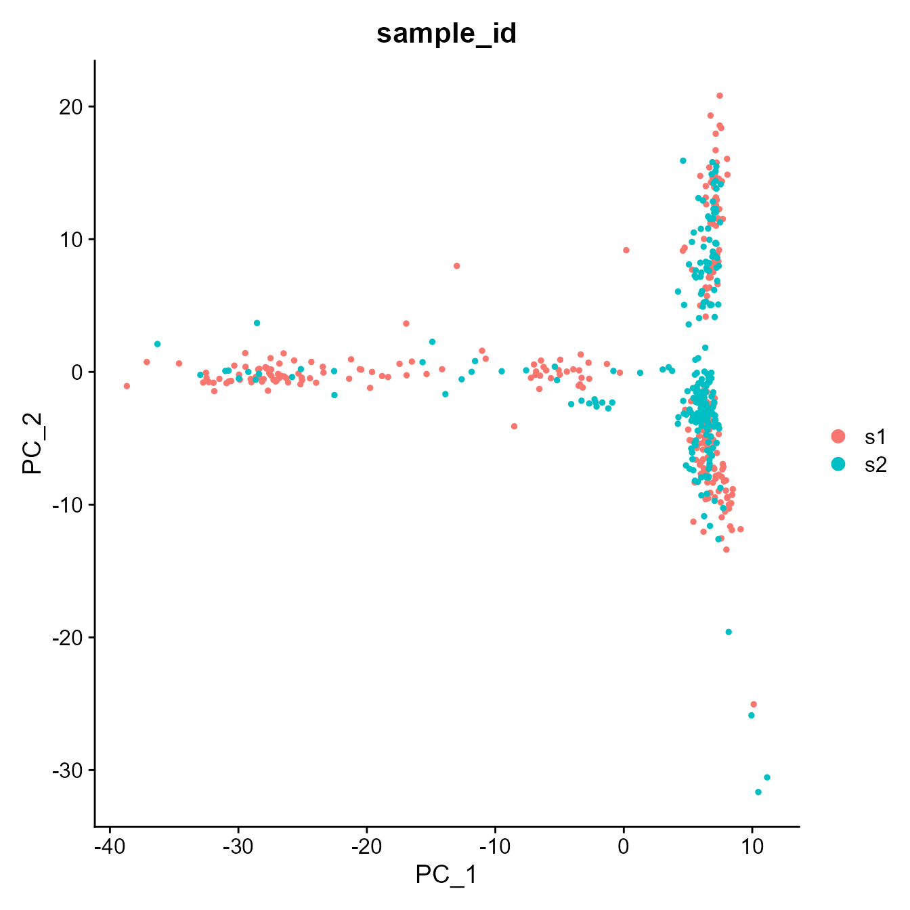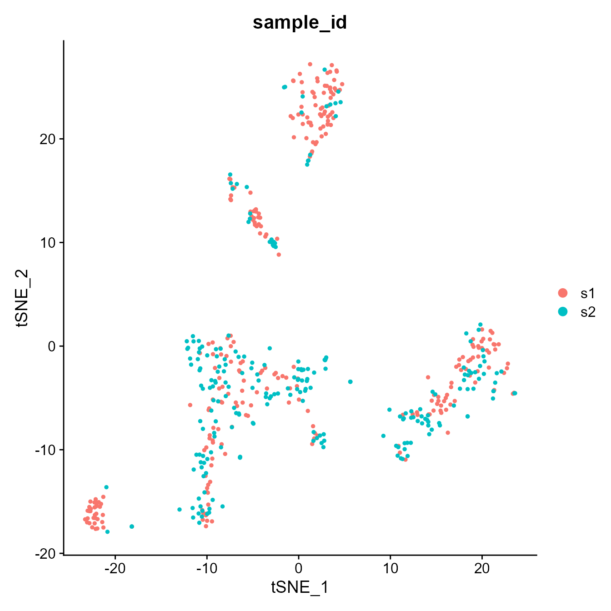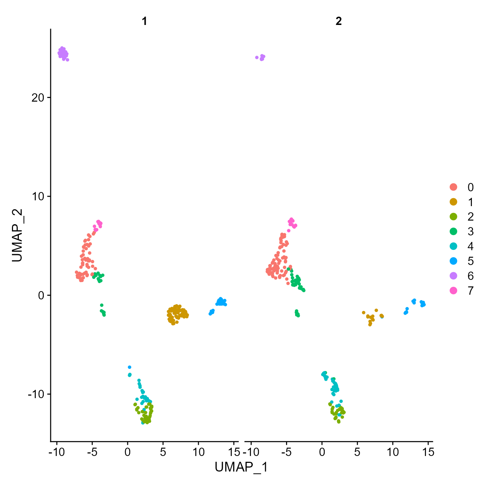
We can observe that the majority of clusters have cells from both samples, suggesting a similar distribution of transcriptional properties between the two samples. We can also plot the cluster membership for each of the distinct samples using the GEX_proportions_barplot function.
GEX_proportions_barplot(GEX = vgm[[2]], stacked.plot = T)## [1] "Reordering source group, as original column did not contain factor levels"
## [1] "Ordering based on existing target group factor levels"
## [1] "Returning stacked barplot with y axis = % of cells of target group"
#This function is very flexible and can also be used to plot proportions of cells in and from any groups. For this use the source.group and target.group parameters to specify metadata columns.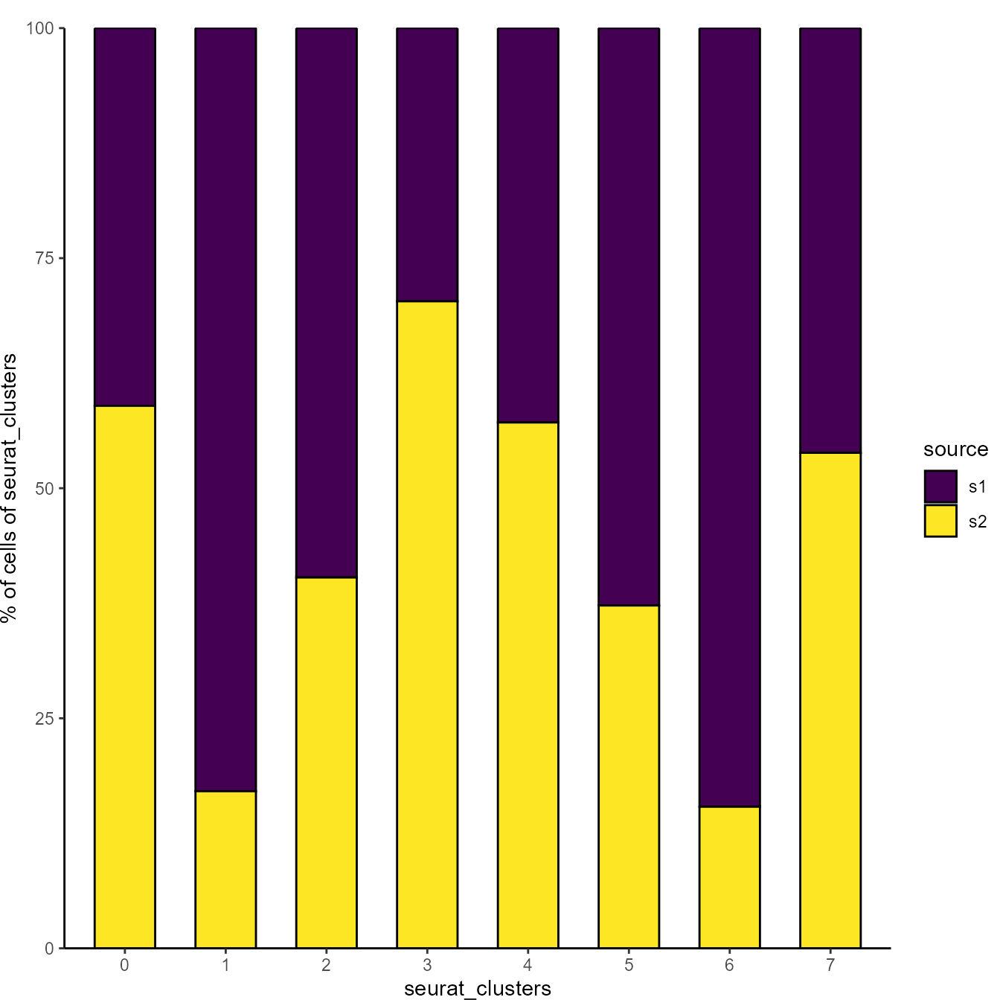
Finally, we can also look at the B cell markers.
Seurat::FeaturePlot(vgm[[2]],reduction = "umap",features = c("CD19","PTPRC", "EBF1", "H2-K1"))
#To easily scout through genes in the dataset use:
#View(as.data.frame(rownames(vgm[[2]])))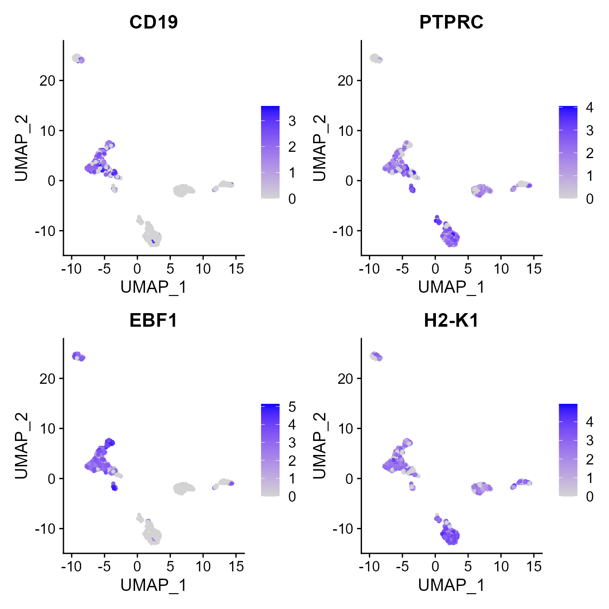
Platypus also allows us to assign cell type/state identity to different clusters by using GEX_phenotype. This function takes the Seurat object as input and uses canonical markers to easily match the clustering to known cell types. The user also has the possibility to use a custom list of markers and their associated cell types/states.
#using defaults
vgm[[2]] <- GEX_phenotype(vgm[[2]], default = T)
#custom criteria
#vgm[[2]] <- Platypus::GEX_phenotype(vgm[[2]], default = F,cell.state.markers=c("CD8A+;CCL5+;CD44+;IL7R-;CD19-","CD8A+;CCL5-;CD44+;IL7R+;CD19-"),cell.state.names=c("EffectorCD8","MemoryCD8"))The resulting Seurat object now contains a “cell.state” column which can be used for annotation in the DimPlot function of the Seurat package.
Seurat::DimPlot(vgm[[2]],reduction = "umap", group.by = "cell.state")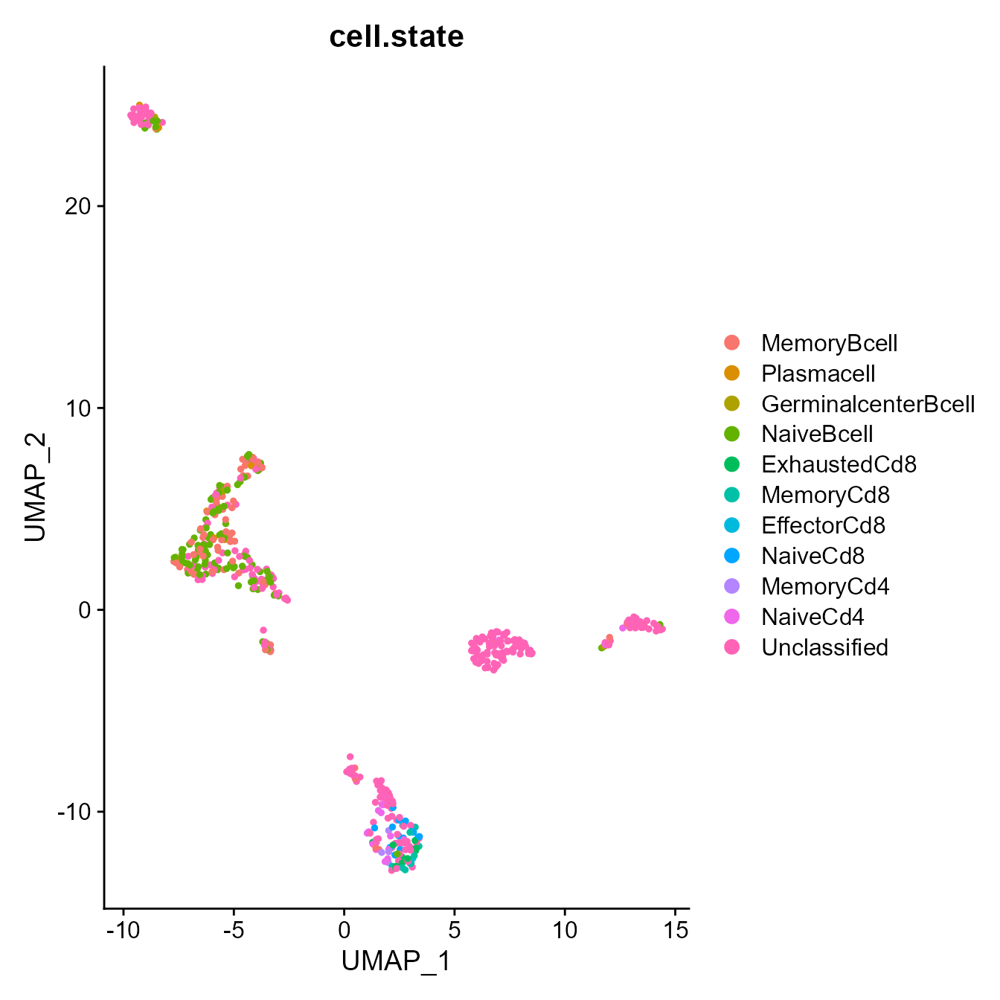
5. Differential Gene Expression Analysis
After scaling, normalizing, and clustering the cells from the GEX libraries we can now investigate which genes are differentially expressed between either clusters or samples. First, we can investigate the genes that define each of the clusters by using the GEX output of the VGM function. Depending on the size of the dataset and the number of cells this function can be quite slow. The output of this function is a list in which each element contains the differentially expressed genes for a given cluster. For example, the first element of the list will correspond to a dataframe describing the genes for cluster0 that we previously observed on the UMAP. This list object will correspond to the length of the number of clusters that were previously calculated, and has the same format as the FindMarkers function from Seurat. The pct.1 will correspond to the percentage of cells expressing the gene in the cluster of interest, and the pct.2 to the percentage of cells in all other clusters.
gene_expression_cluster <- GEX_cluster_genes(vgm[[2]],min.pct = 0.25)
length(gene_expression_cluster) # length of 8, corresponding to 8 clusters## [1] 8## [1] 8## [1] 694 1609 983 729 728 848 886 1174We can now look at some of the genes associated with cluster0 in the previously displayed umap
head(gene_expression_cluster[[1]])## p_val avg_logFC pct.1 pct.2 p_val_adj SYMBOL cluster
## FCMR 5.820454e-59 2.302553 0.806 0.074 1.843978e-54 FCMR 0
## H2-DMB2 2.017417e-57 2.239554 0.828 0.097 6.391378e-53 H2-DMB2 0
## CD74 1.532621e-52 2.352364 1.000 0.349 4.855496e-48 CD74 0
## CD79A 2.986811e-52 2.102871 1.000 0.293 9.462515e-48 CD79A 0
## MS4A1 3.161281e-50 2.206224 0.828 0.117 1.001526e-45 MS4A1 0
## H2-AB1 1.582445e-49 2.199761 0.903 0.194 5.013345e-45 H2-AB1 0Raw tables are informative, but not visually appealing. Differentially expressed genes may be plotted in different modes using Platypus.
It is also possible to create a heatmap displaying differentially expressed genes for each cluster. This can be customized to sub-sample cells in case certain clusters are too large for visualization purposes. Additionally, the user can determine the number of genes to display for each cluster based on the n.genes.per.cluster argument. The function GEX_cluster_genes_heatmap can be used to produce a ggplot object, based on the DoHeatmap from Seurat.
agedCNS_heatmap_clusters <- GEX_cluster_genes_heatmap(GEX = vgm[[2]], GEX_cluster_genes.output = gene_expression_cluster,n.genes.per.cluster = 3,max.cell = 30,metric = "avg_logFC", platypus.version = "v3")
print(agedCNS_heatmap_clusters)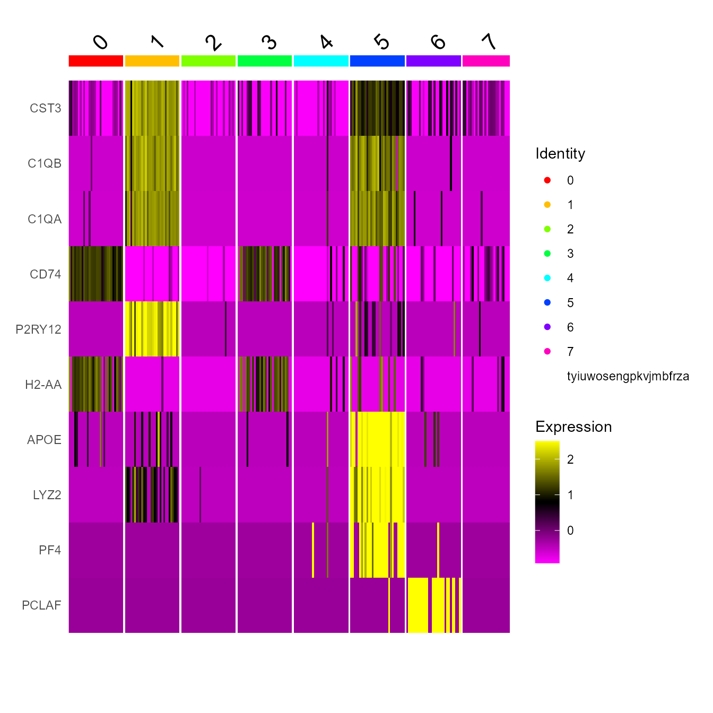
After plotting the ggplot object we can clearly see genes enriched in various clusters - mainly indicated by the diagonal.
Further, volcano plots may be used to show and annotate a larger number of differentially expressed genes
agedCNS_heatmap_volcano <- GEX_volcano(DEGs.input = gene_expression_cluster, input.type = "cluster.genes", RP.MT.filter = T, color.p.threshold = 0.01, n.label.up = 10, n.label.down = 10)## [1] "explicit.title parameter set to T"
## [1] "by.logFC parameter was set to Inf"
## [1] "maximum.overlaps parameter was set to Inf"
## [1] "plot.adj.pvalue parameter was set to F"
## [1] "Geom_points colored in red represent genes with adjusted p-value < 0.01 and logFC > 0.25"
## [1] "Top 10 and bottom 10 genes will be labeled"
print(agedCNS_heatmap_volcano[[1]]) #genes specific to cluster 0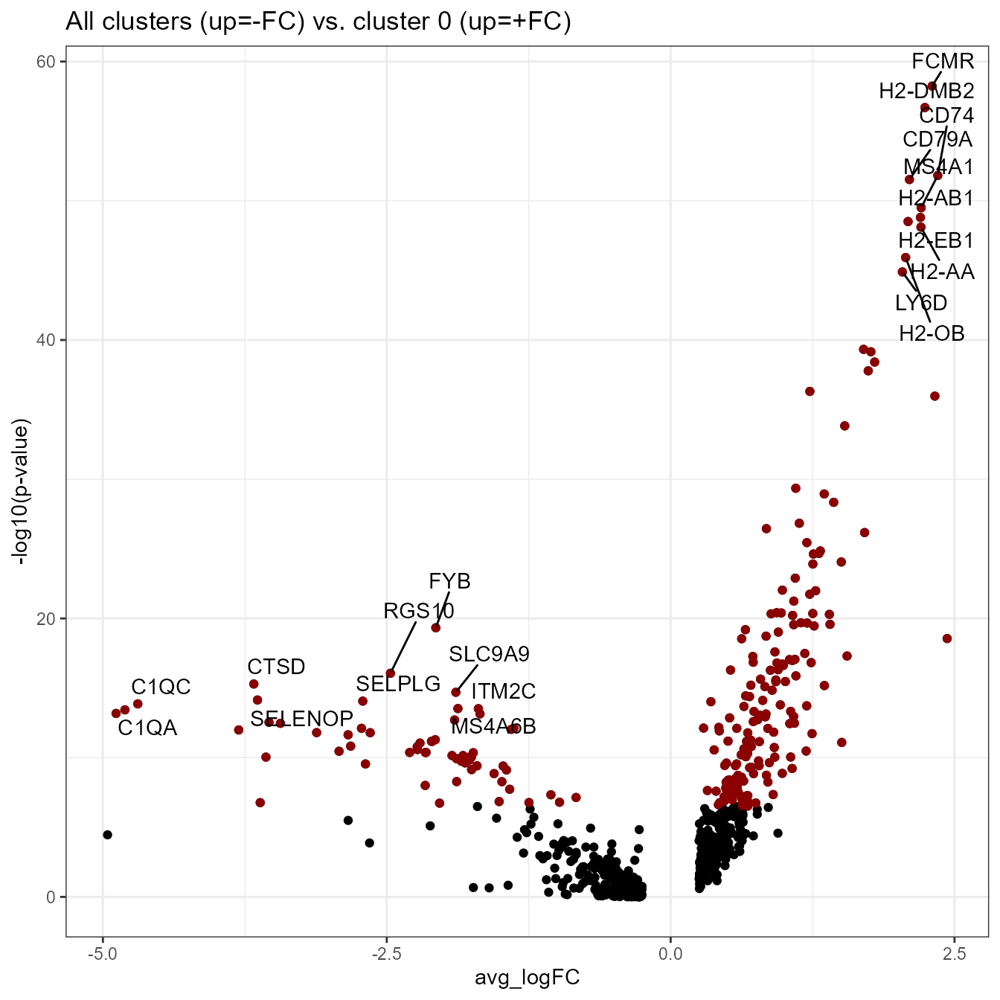 Earlier we mentioned how we can match the unbiased clustering to known cell types using canonical markers. Platypus also allows us to run a GO or KEGG term analysis in order to obtain information on the most significant GO/KEGG terms and their visualizations using the GEX_GOterm function. (To do this, we first need to organize the top genes that define each Seurat cluster and convert them into a single dataframe. This is done using the GEX_topN_DE_genes_per_cluster function). This function does require internet connection.
To return plots as PDF directly to the current working directory set go.plot = T
ontology_agedCNS <- GEX_GOterm(GEX.cluster.genes.output = gene_expression_cluster, topNgenes = 10, go.plots = F)## ## 'select()' returned 1:1 mapping between keys and columns
## 'select()' returned 1:1 mapping between keys and columns
## 'select()' returned 1:1 mapping between keys and columns
## 'select()' returned 1:1 mapping between keys and columns
## 'select()' returned 1:1 mapping between keys and columns
## 'select()' returned 1:1 mapping between keys and columns
## 'select()' returned 1:1 mapping between keys and columns
## 'select()' returned 1:1 mapping between keys and columns
head(ontology_agedCNS[[1]][[1]]) #Cluster 0 We can additionally extract the top N genes per cluster directly (with filtering) using the following function:
top_10_genes_per_cluster <- GEX_topN_DE_genes_per_cluster(GEX_cluster_genes.output = gene_expression_cluster, n.genes = 10, by_FC = T)
head(top_10_genes_per_cluster)## p_val avg_logFC pct.1 pct.2 p_val_adj SYMBOL cluster
## CST3 3.472973e-05 -4.958759 0.552 0.587 1.000000e+00 CST3 0
## C1QB 6.643096e-14 -4.884004 0.015 0.344 2.104599e-09 C1QB 0
## C1QA 3.667693e-14 -4.805934 0.015 0.349 1.161962e-09 C1QA 0
## C1QC 1.366385e-14 -4.692665 0.007 0.349 4.328844e-10 C1QC 0
## LYZ2 1.023376e-12 -3.803902 0.000 0.301 3.242158e-08 LYZ2 0
## CTSD 5.098874e-16 -3.670767 0.179 0.536 1.615374e-11 CTSD 0We can also perform a Gene Set Enrichment Analysis (GSEA) using the GEX_GSEA function. For this, the user needs to provide the path to a gmt file containing the gene sets, which can be downloaded for example from MSigDB. For instance we can perform GSEA for cluster0 and look at the most significant pathways.
gsea_EAE <- GEX_GSEA(GEX.cluster.genes.output = gene_expression_cluster[[1]], MT.Rb.filter = T, path.to.pathways = "~/Downloads/c7.all.v7.4.symbols.gmt")## [1] "filter parameter set to c('MT-', 'RPL', 'RPS'). Mitochondrial and ribosomal genes will be filtered out"
## [1] "metric.colname parameter set to avg_logFC"
## [1] "pval.adj.cutoff parameter set to 0.001"
## [1] "MSigDB collection: ~/Downloads/c7.all.v7.4.symbols.gmt"
## [1] "eps parameter set to 1e-10"
## [1] "No genes matching filter found"
## [1] "pre-gsea"
## pathway
## 1: ANDERSON_BLOOD_CN54GP140_ADJUVANTED_WITH_GLA_AF_AGE_18_45YO_6HR_DN
## 2: CAO_BLOOD_FLUZONE_AGE_05_14YO_7DY_DN
## 3: ERWIN_COHEN_BLOOD_LIVE_VACCINE_TC_83_AGE_23_48YO_VACCINATED_VS_CONTROL_14DY_UP
## 4: ERWIN_COHEN_BLOOD_TC_83_AGE_23_48YO_VACCINATED_VS_CONTROL_2DY_UP
## 5: ERWIN_COHEN_BLOOD_VACCINE_TC_83_AGE_23_48YO_VACCINATED_VS_CONTROL_7DY_UP
## ---
## 4034: ZAK_PBMC_MRKAD5_HIV_1_GAG_POL_NEF_AGE_20_50YO_1DY_UP
## 4035: ZAK_PBMC_MRKAD5_HIV_1_GAG_POL_NEF_AGE_20_50YO_3DY_DN
## 4036: ZAK_PBMC_MRKAD5_HIV_1_GAG_POL_NEF_AGE_20_50YO_3DY_UP
## 4037: ZAK_PBMC_MRKAD5_HIV_1_GAG_POL_NEF_AGE_20_50YO_AD5_NAB_TITERS_GTE_200_VS_LTE_200_1DY_UP
## 4038: ZAK_PBMC_MRKAD5_HIV_1_GAG_POL_NEF_AGE_20_50YO_AD5_NAB_TITERS_GT_200_VS_LTE_200_1DY_DN
## pval padj log2err ES NES size
## 1: 0.699443414 0.99892737 0.05871859 -0.4451115 -0.8210115 3
## 2: 0.472392638 0.97486367 0.08336341 0.6166449 1.0067649 2
## 3: 0.957792208 0.99892737 0.07061962 0.1459459 0.5680392 17
## 4: 0.897435897 0.99892737 0.05367696 0.3510685 0.6677436 3
## 5: 0.920245399 0.99892737 0.05049830 0.4207035 0.6868614 2
## ---
## 4034: 0.000469476 0.06684437 0.49849311 -0.5617667 -1.9794877 29
## 4035: 0.055214724 0.65743835 0.27650060 0.8550000 1.3959153 2
## 4036: 0.003796123 0.22878726 0.43170770 -0.7901172 -1.8169815 6
## 4037: 0.604221636 0.99504362 0.08383611 0.3078510 0.8740387 8
## 4038: 0.008278197 0.29550201 0.38073040 -0.8234590 -1.6659299 4
## leadingEdge
## 1: RGS10
## 2: PLAUR,LRRK2
## 3: MS4A1,SERP1,BIRC3,LY6E,MZB1,TXNDC5,...
## 4: SP140,LY6E
## 5: LY6E,SHISA5
## ---
## 4034: C1QB,C1QC,CTSD,P2RY12,FCER1G,CSF1R,...
## 4035: BLK,CXCR5
## 4036: C1QB,CSF1R,CX3CR1,CTSL
## 4037: MS4A1,CCR7,BANK1,FCRL1
## 4038: C1QB,C1QC,P2RY12
## [1] "post-gsea"## Registered S3 method overwritten by 'cli':
## method from
## print.boxx spatstat.geom## # A tibble: 4,038 x 8
## pathway pval padj log2err ES NES size leadingEdge
## <chr> <dbl> <dbl> <dbl> <dbl> <dbl> <int> <list>
## 1 GSE32901_NAIVE_VS_TH1~ 3.68e-8 1.48e-4 0.720 0.691 3.03 24 <chr [14]>
## 2 GSE16266_LPS_VS_HEATS~ 1.24e-6 1.62e-3 0.644 0.624 2.82 26 <chr [18]>
## 3 GSE29618_BCELL_VS_PDC~ 2.23e-6 1.80e-3 0.627 0.601 2.73 27 <chr [17]>
## 4 GSE29618_BCELL_VS_MDC~ 8.61e-6 4.97e-3 0.593 0.560 2.68 30 <chr [20]>
## 5 GSE29618_BCELL_VS_MON~ 3.16e-5 1.42e-2 0.557 0.540 2.55 29 <chr [19]>
## 6 GSE29618_BCELL_VS_MDC~ 8.67e-5 2.94e-2 0.538 0.499 2.41 32 <chr [20]>
## 7 GSE23568_ID3_KO_VS_WT~ 1.83e-4 3.51e-2 0.519 0.483 2.34 33 <chr [25]>
## 8 GSE4984_UNTREATED_VS_~ 3.09e-4 5.05e-2 0.498 0.534 2.31 23 <chr [18]>
## 9 GSE33425_CD8_ALPHAALP~ 3.13e-4 5.05e-2 0.498 0.534 2.31 23 <chr [20]>
## 10 GSE33424_CD161_HIGH_V~ 1.48e-4 3.15e-2 0.519 0.513 2.30 25 <chr [21]>
## # ... with 4,028 more rowsWe can extract and test for differentially expressed genes between the two samples (or between other subgroups) by using the GEX_DEgenes_persample function.
This function allows us to also create a heatmap displaying the top most up- or downregulated genes for each cluster based on log fold change (avg_logFC) or p value (adj_p_value). Additionally, the user can determine the number of up- and downreulated genes to be displayed for each sample. In this case, the output returns a list where the first element contains the dataframe with the differntial expression information and the second element contains the heatmap displaying the most up-/downregulated genes.
If more than two samples are to be examined please refer to GEX_pairwise_degs two chunks below
DE_genes_samples <- GEX_DEgenes(GEX = vgm[[2]],min.pct = .25, grouping.column = "sample_id",group1 = "s1", group2 = "s2",return.plot = "volcano",up.genes = 5,down.genes = 5,logFC = F)
#This function is flexible and takes any column name as grouping.column to allow easy exploration of differences between custom groups
head(DE_genes_samples[[1]]) ## p_val avg_logFC pct.1 pct.2 p_val_adj SYMBOL
## RGS10 1.428293e-12 1.178020 0.427 0.138 4.524976e-08 RGS10
## CTSD 2.682698e-11 1.849162 0.563 0.304 8.499054e-07 CTSD
## C1QC 2.503352e-10 1.534847 0.371 0.133 7.930869e-06 C1QC
## HPGDS 6.532140e-10 1.096960 0.283 0.075 2.069447e-05 HPGDS
## CST3 6.749313e-10 1.778366 0.678 0.458 2.138250e-05 CST3
## C1QA 1.036422e-09 1.477954 0.371 0.138 3.283490e-05 C1QA
DE_genes_samples[[2]] 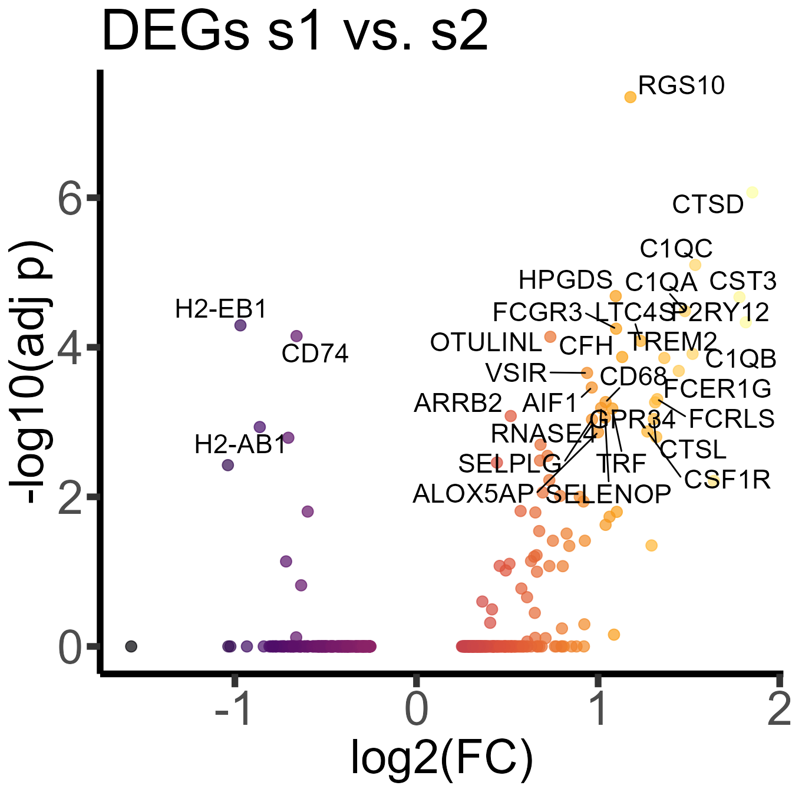
The same function can also return DEGs between seurat clusters or any 2 groups of cells Here DEGs between cluster 1 and 3 are calculated
DE_genes_cl1_vs_3 <- GEX_DEgenes(GEX= vgm[[2]],min.pct = .25, grouping.column = "seurat_clusters",group1 = "1", group2 = "3",return.plot = "heatmap",up.genes = 10,down.genes = 10,logFC = F)
#head(DE_genes_cl1_vs_3[[1]])
DE_genes_cl1_vs_3[[2]] 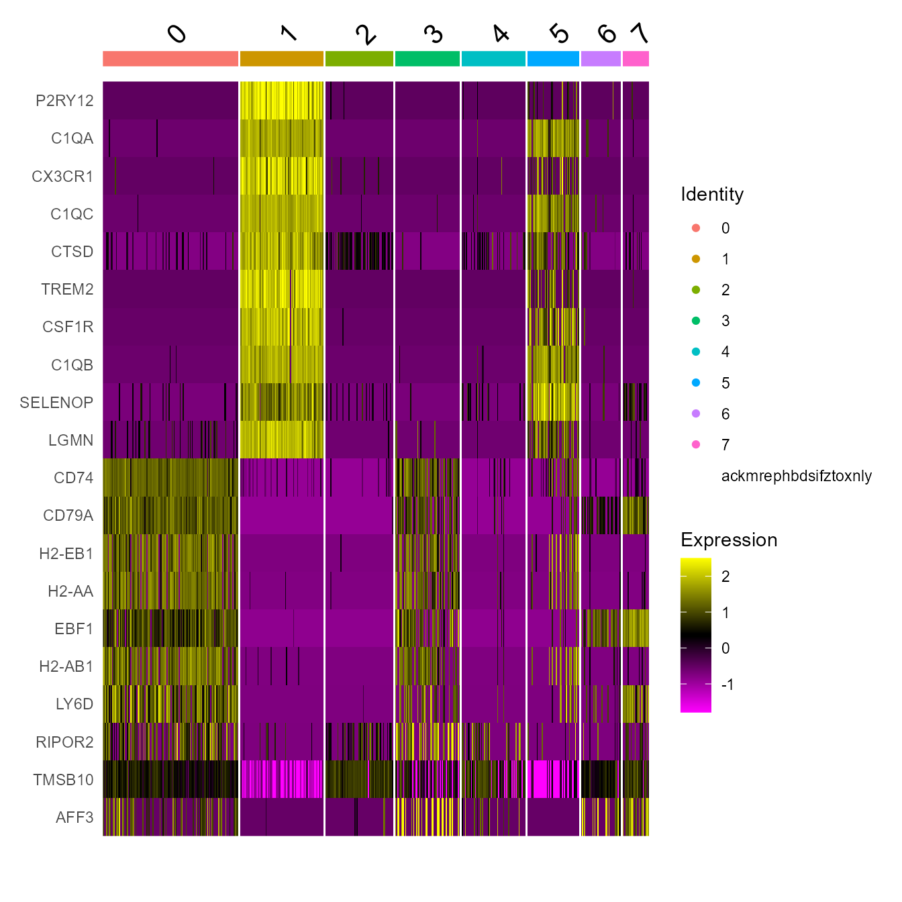
To gain a complete overview of DEGs between groups or clusters the GEX_pairwise_degs function is used This function calculates DEGs for every possible pairwise comparison between groups of the selected column. It is thereby recommended to use this function with a maximum number of 10 groups/clusters/samples This function automatically saves plots where top label.n.top.genes genes are labeled by their p value. Additionally, genes of special interest that should be labeled irregardless of their p value can be supplied to genes.to.label
DE_clusters_all <- GEX_pairwise_DEGs(GEX = vgm[[2]], group.by = "seurat_clusters", min.pct = 0.25, RP.MT.filter = T, label.n.top.genes = 10, genes.to.label = c("CD74", "EBF1"), save.plot = F)Now that cluster defining genes have been examined, a helper plotting function allows to visualize selected genes.
dottile <- GEX_dottile_plot(GEX = vgm[[2]], genes = c("CD19", "CD74","SDC1", "EBF1","PTPRC","CD93","CD38","CD24A","CD34","CD1D1","CR2","MS4A1","CXCR5","SELL","CD40","CD83","H2-AB1","H2-EB1","CD27","POU2AF1","NT5E","FAS","PDCD1LG2","PRDM1","ITGAM","IL10","IL12A","HAVCR2"), group.by = "seurat_clusters", threshold.to.plot = 5)
#threshold.to.plot specifies how many % of cells have to express a gene to show a dot.
dottile + ggplot2::theme(plot.title = ggplot2::element_blank(), plot.subtitle = ggplot2::element_blank(), legend.position = "bottom") #For visualisation purposes in the RMD format## Warning: Removed 125 rows containing missing values (geom_point).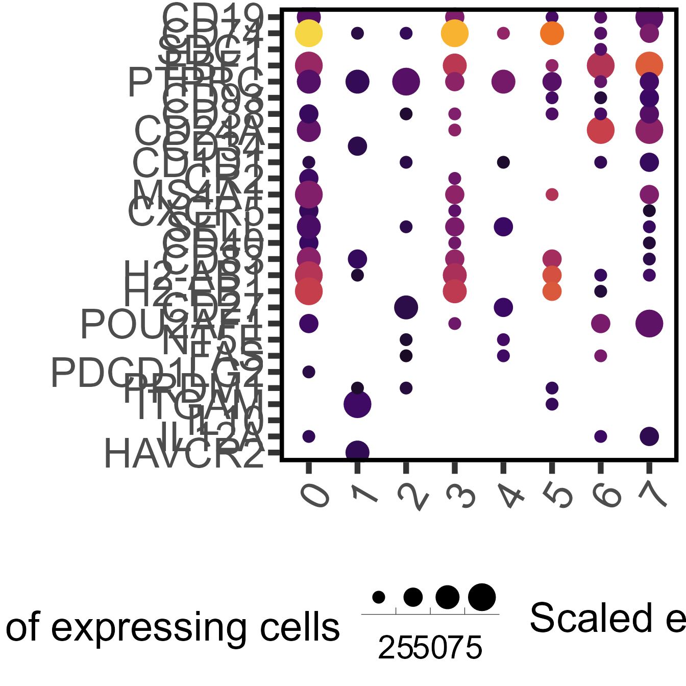
To examine patterns of co-expression two functions allow to generate both overview and single-cell resolution plots.
#overview
coexpression_dotmap <- GEX_coexpression_coefficient(GEX = vgm[[2]], genes = c("CD19", "CD74","SDC1", "EBF1","PTPRC","CD93","CD38","CD24A","CD34"), plot.dotmap = T)## [1] "Calculating coexpression for 9 genes with 526 cells"
coexpression_dotmap + ggplot2::theme(legend.position = "bottom")
#detail of two selected genes
GEX_scatter_coexpression(GEX = vgm[[2]], gene.1 = "CD19", gene.2 = "EBF1", color.theme = "darkred")
#to save use:
#ggsave(last_plot(), filename = "Coexpression_scatter.png")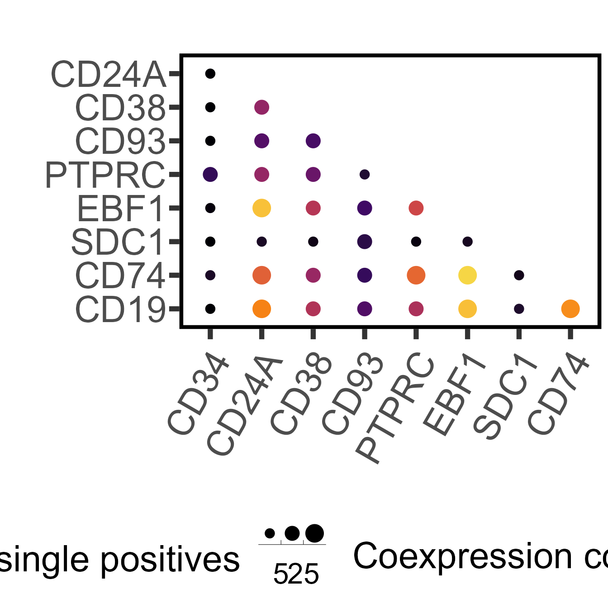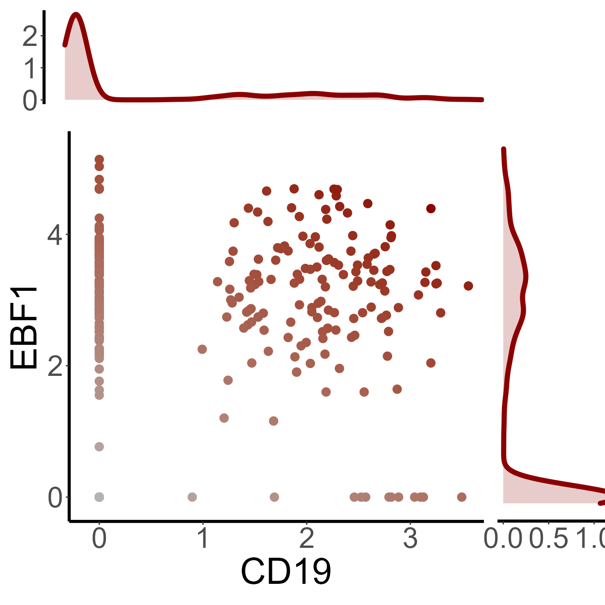
6. VDJ Repertoire anaylsis
6.1 Checking vgm output
Now we can analyze the VDJ repertoire data before integrating VDJ and GEX information. This may be useful if only VDJ libraries have been sequenced without the accompanying gene expression data. We first start by examining the structure of vgm[[1]]
## [1] "barcode" "sample_id"
## [3] "group_id" "clonotype_id_10x"
## [5] "celltype" "Nr_of_VDJ_chains"
## [7] "Nr_of_VJ_chains" "VDJ_cdr3s_aa"
## [9] "VJ_cdr3s_aa" "VDJ_cdr3s_nt"
## [11] "VJ_cdr3s_nt" "VDJ_chain_contig"
## [13] "VJ_chain_contig" "VDJ_chain"
## [15] "VJ_chain" "VDJ_vgene"
## [17] "VJ_vgene" "VDJ_dgene"
## [19] "VDJ_jgene" "VJ_jgene"
## [21] "VDJ_cgene" "VJ_cgene"
## [23] "VDJ_sequence_nt_raw" "VJ_sequence_nt_raw"
## [25] "VDJ_sequence_nt_trimmed" "VJ_sequence_nt_trimmed"
## [27] "VDJ_sequence_aa" "VJ_sequence_aa"
## [29] "VDJ_trimmed_ref" "VJ_trimmed_ref"
## [31] "VDJ_raw_consensus_id" "VJ_raw_consensus_id"
## [33] "orig_barcode" "clonotype_frequency"
## [35] "specifity" "affinity"
## [37] "GEX_available" "orig.ident"
## [39] "orig_barcode_GEX" "seurat_clusters"
## [41] "PC_1" "PC_2"
## [43] "UMAP_1" "UMAP_2"
## [45] "tSNE_1" "tSNE_2"
## [47] "batches" "clonotype_id"If GEX data has been integrated, this dataframe also contains dimensional reduction coordinates and cluster id. If trim.and.align was set to TRUE, the columns VDJ_sequence_nt_trimmed to VJ_trimmed_ref contain aligned and reference sequences. The clonotype_frequency column takes input from the clonotyping output of cellranger, which is saved int the clonotype_id_10x column.
This object contains both cells with less than 2 V(D)J chains as well as with more than 2 To show how this is done the VDJ_cgene column is taken as an example
## [1] "IGHM" "IGHD" "" "IGHM;IGHM" "IGHG2B"
## [6] "IGHM;IGHD" "IGHG1" "IGHA" "IGHM;IGHG2C"Apart from classical isotypes, we can see an empty ("“) element. This is for cells, for which only a VJ chain is available. Secondly we can see 3 examples of cells containing more than one VDJ chains. These are delimited by”;". Importantly, this format is maintained throughout all columns.
Both cells with less and more than 2 chains can be cumbersome for analysis. Platypus V3 functions generally support such cells. To check their quantity and, if needed, exclude these, the following line can be used
cat(" Cell count by number of VDJ chains")## Cell count by number of VDJ chains##
## 0 1 2
## 16 218 4
cat("\n Cell count by number of VJ chains")##
## Cell count by number of VJ chains##
## 0 1 2
## 21 200 17
#Subset the VGM matrix to only include cells with 1 VDJ and 1VJ chain
#vgm[[1]] <- subset(vgm[[1]], Nr_of_VJ_chains == 1 & Nr_of_VJ_chains == 1)6.2 Changing the clonotype strategy
Often paired nucleotide CDRH3 and CDRL3 clonotyping may not be the best strategy given somatic hypermutation may occur in the CDR3 region. Therefore, there could be highly similar clones that likely bind the same antigen that are officially part of different clonal families. To address this, we have added a function that allows for various heuristic clonotyping strategies. This involves clonotyping by identical amino acid CDRH3 + CDRL3 seuqence, identical germline usage, or seqeunce homology requirements. This function works both for V3 and V2 of platypus. The version needs to be specified. For V3 (vgm) platypus.version should be set to “v3” and the whole vgm object should be supplied as VDJ.GEX.matrix. Two important parameters have been added: 1. global.clonotype If set to TRUE, clonotypes will be generated across all samples of the vgm. This may be useful if more than one sample has been taken from the same animal (e.g. spleen and bone marrow) 2. output.format The function can export either a vgm format (set to “vgm”) of a list of dataframes, one for each sample both at cell and clonotype resolution (set to “dataframe.per.sample”, “clone.level.dataframes” or “dataframe.per.clone”) If output.format is set to “vgm” the function will update the clonotype_id column (not the clonotype_id_10x) and add a new columns containing new clonotype frequencies and the determining motives
A note for cells with aberrant numbers of VDJ and VJ chains: the functions implements a hierarchical clonotyping strategy for such cells. In brief, clonotypes are determined based on all cells with exactly 1VDJ and 1VJ chain. Other cells are then “joined in” in post. Two examples for illustration: 1. A cell with 0VDJ and 1VJ chain is joined to an existing clonotype containing the same or a homologous VJ chain, depending of the clonotyping strategy. 2. A cell with 1VDJ and 2VJ chain will be matched to a clonotype that contains either of the two possible combinations of the chains of that aberrant cell. In case that no existing clonotype matches the abberant cell in question, a new clonotype will be assigned In case of multiple matching clonotypes, abberant cells will be assigned to the most frequent of them. Cells with 2VDJ and 2VJ chains are excluded as these most likely correspond to doublets.
In the example that follows, we use VDJ_clonotype to group cells into clones based on identical CDRH3 + CDRL3 amino acid sequence. We will compare this to the case in which we group B cells by using the same germline genes (both heavy chain and light chain).
vgm <- Platypus::VDJ_clonotype(platypus.version = "v3", VDJ.GEX.matrix = vgm, clone.strategy = "cdr3.aa", global.clonotype = F, output.format = "vgm")## Lade nötiges Paket: stringdist## Lade nötiges Paket: parallel
cat(" Nr and distribution of clonotypes using exact CDR3.aa matching \n")## Nr and distribution of clonotypes using exact CDR3.aa matching## [1] 201
print(table(vgm[[1]]$new_clonal_frequency)) #Check distribution of clonotypes with identical CDR3 aa sequences##
## 1 2 3 5 10
## 183 22 15 5 10
vgm <- Platypus::VDJ_clonotype(platypus.version = "v3", VDJ.GEX.matrix = vgm, clone.strategy = "hvj.lvj", global.clonotype = F, output.format = "vgm")
cat("\n Nr and distribution of clonotypes using germline gene matching \n ")##
## Nr and distribution of clonotypes using germline gene matching
## ## [1] 175
print(table(vgm[[1]]$new_clonal_frequency)) #Check distribution of clonotypes with identical germline genes##
## 1 2 3 4 6 7 10
## 149 38 21 4 6 7 10Clonotyping based on germline genes resulted in less clonotypes (175 vs. 201).
6.3 Extracting full-length sequences from the VDJRegion
At the start of this vignette the VGM function was run with trim.and.align = F. Here we run the function again, but this time with trim.and.align = T. This does take significantly longer
To accelerate runtime, parallel computing options are available. If running a Windows machine parallel.processing should be set to “parlapply” This does require the package Parallel and its dependencies. The additional parameter numcores allows to set the numbers of cores to use. This is important when running the function on a cluster. If on a MAC or Linux machine, set parallel.processing to “mclapply”
Reference sequences are optained from the cellranger output and thereby the 10x Genomics reference. Further trimming is made based on annotations by cellranger (feature$region_type). Alignment is done via Biostrings::pairwiseAlignment and the alignment with maximum score is returned. If alignments are not complete, the vgm parameters gap.opening.cost and gap.extension.cost can be modified
vgm <- VDJ_GEX_matrix(VDJ.out.directory.list = VDJ.out.directory.list,
GEX.out.directory.list = GEX.out.directory.list,
GEX.integrate = T,
VDJ.combine = T,
integrate.GEX.to.VDJ = T,
integrate.VDJ.to.GEX = T,
exclude.GEX.not.in.VDJ = F,
filter.overlapping.barcodes.GEX = T,
filter.overlapping.barcodes.VDJ = T,
exclude.on.cell.state.markers = c("CD3E"),
get.VDJ.stats = T,
parallel.processing = "none",
trim.and.align = T, #Set this to TRUE for full length sequence recovery
group.id = c(1,2),
gap.opening.cost = 10,
gap.extension.cost = 4) #Tweak to optimize alignments if neccessary
#saving this for later
#saveRDS(vgm, "VDJ_GEX_matrix_agedCNS.rds")No trimmed and reference sequence columns should be filled.
print(vgm[[1]][1,])## barcode sample_id group_id clonotype_id_10x celltype
## 1 s1_AAACGGGGTTTAGGAA-1 s1 1 clonotype7 B cell
## Nr_of_VDJ_chains Nr_of_VJ_chains VDJ_cdr3s_aa VJ_cdr3s_aa
## 1 1 1 CARIGYAMDYW CQQGNTLPPTF
## VDJ_cdr3s_nt VJ_cdr3s_nt
## 1 TGTGCTCGAATAGGATATGCTATGGACTACTGG TGCCAACAGGGTAATACGCTTCCTCCGACGTTC
## VDJ_chain_contig VJ_chain_contig VDJ_chain VJ_chain
## 1 AAACGGGGTTTAGGAA-1_contig_2 AAACGGGGTTTAGGAA-1_contig_1 IGH IGK
## VDJ_vgene VJ_vgene VDJ_dgene VDJ_jgene VJ_jgene VDJ_cgene VJ_cgene
## 1 IGHV8-8 IGKV10-96 IGHJ4 IGKJ1 IGHM IGKC
## VDJ_sequence_nt_raw
## 1 TGGGAAGTGTGCAGCCATGGGCAGGCTTACTTCTTCATTCCTGTTACTGATTGTCCCTGCATATGTCCTGTCCCAGGTTACTCTGAAAGAGTCTGGCCCTGGGATATTGCAGCCCTCCCAGACCCTCAGTCTGACTTGTTCTTTCTCTGGGTTTTCACTGAGCACTTTTGGTATGGGTGTAGGCTGGATTCGTCAGCCTTCAGGGAAGGGTCTGGAGTGGCTGGCACACATTTGGTGGGATGATGATAAGTACTATAACCCAGCCCTGAAGAGTCGGCTCACAATCTCCAAGGATACCTCCAAAAACCAGGTATTCCTCAAGATCGCCAATGTGGACACTGCAGATACTGCCACATACTACTGTGCTCGAATAGGATATGCTATGGACTACTGGGGTCAAGGAACCTCAGTCACCGTCTCCTCAGAGAGTCAGTCCTTCCCAAATGTCTTCCCCCTCGTCTCCTGCGAGAGCCCCCTGTCTGATAAGAATCTGGTGGCCATGGGCTGCCTGGCCCGGGACTTCCTGCCCAGCACCATTTCCTTCACCTGGAACTACCAGAACAACACTGAAGTCATCCAGGGTATCAGAACCTTCCCAACACTGAGGACAGGGGGCAAGTACCTAGCCACCTCGCA
## VJ_sequence_nt_raw
## 1 TTGGGGCATTGTAATTGAAGTCAAGACTCAGCCTGGACATGATGTCCTCTGCTCAGTTCCTTGGTCTCCTGTTGCTCTGTTTTCAAGGTACCAGATGTGATATCCAGATGACACAGACTACATCCTCCCTGTCTGCCTCTCTGGGAGACAGAGTCACCATCAGTTGCAGGGCAAGTCAGGACATTAGCAATTATTTAAACTGGTATCAGCAGAAACCAGATGGAACTGTTAAACTCCTGATCTACTACACATCAAGATTACACTCAGGAGTCCCATCAAGGTTCAGTGGCAGTGGGTCTGGAACAGATTATTCTCTCACCATTAGCAACCTGGAGCAAGAAGATATTGCCACTTACTTTTGCCAACAGGGTAATACGCTTCCTCCGACGTTCGGTGGAGGCACCAAGCTGGAAATCAAACGGGCTGATGCTGCACCAACTGTATCCATCTTCCCACCATCCAGTGAGCAGTTAACATCTGGAGGTGCCTCAGTCGTGTGCTTC
## VDJ_sequence_nt_trimmed
## 1 ATGGGCAGGCTTACTTCTTCATTCCTGTTACTGATTGTCCCTGCATATGTCCTGTCCCAGGTTACTCTGAAAGAGTCTGGCCCTGGGATATTGCAGCCCTCCCAGACCCTCAGTCTGACTTGTTCTTTCTCTGGGTTTTCACTGAGCACTTTTGGTATGGGTGTAGGCTGGATTCGTCAGCCTTCAGGGAAGGGTCTGGAGTGGCTGGCACACATTTGGTGGGATGATGATAAGTACTATAACCCAGCCCTGAAGAGTCGGCTCACAATCTCCAAGGATACCTCCAAAAACCAGGTATTCCTCAAGATCGCCAATGTGGACACTGCAGATACTGCCACATACTACTGTGCTCGAATAGGATATGCTATGGACTACTGGGGTCAAGGAACCTCAGTCACCGTCTCCTCA
## VJ_sequence_nt_trimmed
## 1 ATGATGTCCTCTGCTCAGTTCCTTGGTCTCCTGTTGCTCTGTTTTCAAGGTACCAGATGTGATATCCAGATGACACAGACTACATCCTCCCTGTCTGCCTCTCTGGGAGACAGAGTCACCATCAGTTGCAGGGCAAGTCAGGACATTAGCAATTATTTAAACTGGTATCAGCAGAAACCAGATGGAACTGTTAAACTCCTGATCTACTACACATCAAGATTACACTCAGGAGTCCCATCAAGGTTCAGTGGCAGTGGGTCTGGAACAGATTATTCTCTCACCATTAGCAACCTGGAGCAAGAAGATATTGCCACTTACTTTTGCCAACAGGGTAATACGCTTCCTCCGACGTTCGGTGGAGGCACCAAGCTGGAAATCAAA
## VDJ_sequence_aa
## 1 MGRLTSSFLLLIVPAYVLSQVTLKESGPGILQPSQTLSLTCSFSGFSLSTFGMGVGWIRQPSGKGLEWLAHIWWDDDKYYNPALKSRLTISKDTSKNQVFLKIANVDTADTATYYCARIGYAMDYWGQGTSVTVSS
## VJ_sequence_aa
## 1 MMSSAQFLGLLLLCFQGTRCDIQMTQTTSSLSASLGDRVTISCRASQDISNYLNWYQQKPDGTVKLLIYYTSRLHSGVPSRFSGSGSGTDYSLTISNLEQEDIATYFCQQGNTLPPTFGGGTKLEIK
## VDJ_trimmed_ref
## 1 ATGGGCAGGCTTACTTCTTCATTCCTGTTACTGATTGTCCCTGCATATGTCCTGTCCCAGGTTACTCTGAAAGAGTCTGGCCCTGGGATATTGCAGCCCTCCCAGACCCTCAGTCTGACTTGTTCTTTCTCTGGGTTTTCACTGAGCACTTTTGGTATGGGTGTAGGCTGGATTCGTCAGCCTTCAGGGAAGGGTCTGGAGTGGCTGGCACACATTTGGTGGGATGATGATAAGTACTATAACCCAGCCCTGAAGAGTCGGCTCACAATCTCCAAGGATACCTCCAAAAACCAGGTATTCCTCAAGATCGCCAATGTGGACACTGCAGATACTGCCACATACTACTGTGCTCGAATAGATTACTATGCTATGGACTACTGGGGTCAAGGAACCTCAGTCACCGTCTCCTCA
## VJ_trimmed_ref
## 1 ATGATGTCCTCTGCTCAGTTCCTTGGTCTCCTGTTGCTCTGTTTTCAAGGTACCAGATGTGATATCCAGATGACACAGACTACATCCTCCCTGTCTGCCTCTCTGGGAGACAGAGTCACCATCAGTTGCAGGGCAAGTCAGGACATTAGCAATTATTTAAACTGGTATCAGCAGAAACCAGATGGAACTGTTAAACTCCTGATCTACTACACATCAAGATTACACTCAGGAGTCCCATCAAGGTTCAGTGGCAGTGGGTCTGGAACAGATTATTCTCTCACCATTAGCAACCTGGAGCAAGAAGATATTGCCACTTACTTTTGCCAACAGGGTAATACGCTTCCTCCGTGGACGTTCGGTGGAGGCACCAAGCTGGAAATCAAA
## VDJ_raw_consensus_id VJ_raw_consensus_id orig_barcode
## 1 clonotype7_concat_ref_1 clonotype7_concat_ref_2 AAACGGGGTTTAGGAA-1
## clonotype_frequency specifity affinity GEX_available orig.ident
## 1 1 NA NA FALSE <NA>
## orig_barcode_GEX seurat_clusters PC_1 PC_2 UMAP_1 UMAP_2 tSNE_1 tSNE_2
## 1 <NA> <NA> NA NA NA NA NA NA
## batches clonotype_id
## 1 Unspecified clonotype7A different way to get germline reference sequences is by using MIXCR. MIXCR can be called directly from R on both Windows and MAC machines. Given that output files have to be read in, it is important to set the working directory correctly and (Essential for Windows users) have a version of MIXCR available in that working directory.
Moreover to quantify the number of somatic variants or to extract full-length sequences for expression, it is often useful to have the nucleotide sequence from framework region 1 (FR1) to framework region 4 (FR4). Using the call_MIXCR function, the full-length VDJRegion sequences can be added to the clonal information and easily extracted thereafter. This function works on UNIX/Mac and furthermore requires that mixcr is already downloaded locally (with license agreement).
FOR MAC/UNIX users
One needs to supply the directory to the executable in the call_MIXCR function as below. Either “mmu” or “hsa” for mouse and human, respectively. Again, the format is similar to the input, in that the outer list corresponds to the individual repertoire and the inner list is a dataframe with various information, including the full-length VDJ sequences (e.g., VDJ.AA.LC and VDJ.AA.HC for the light and heavy chain amino acid sequence). One will notice that the germline sequence is still very long (e.g., in the example below the “full_HC_germline” length is over 600 nucleotides). This will be filled in using the separate function VDJ_extract_germline.
### WARNING: You will need to download MiXCR and change the mixcr.directory to the location of MiXCR
#VDJ_mixcr_out <- VDJ_call_MIXCR(VDJ.matrix = vgm[[1]], mixcr.directory = "~/Downloads/mixcr.jar",species = "mmu", platypus.version = "v3", operating.system = "Darwin", simplify = T)
#set simplify to T to append only a selected columns of the MIXCR output to the vgm matrixFOR Windows users
The mixcr.jar executable needs to be in the current working directory!
#check working directory
#getwd()
### WARNING: You will need to download MiXCR and have it in your current working directory
VDJ_mixcr_out <- VDJ_call_MIXCR(VDJ = vgm[[1]], mixcr.directory = "Is set automatically to current working directory",species = "mmu", platypus.version = "v3", operating.system = "Windows", simplify = T)## [1] "!Reminder For runtime stability a MIXCR executable has to be located in current working directory"
## [1] "Done"
#set simplify to T to append only a selected columns of the MIXCR output to the vgm matrix
#set to False to save as separate object with the complete MIXCR output as in this case6.5 Plotting SHMs
Directly from the MIXCR output we can plot the frequency of somatic hypermutations and run basic tests of significance between groups
VDJ_plot_SHM(VDJ = VDJ_mixcr_out, group.by = "sample_id", quantile.label = 0.95)## [1] "VDJ chain SHM data summary"
## group count mean sd median IQR
## 1 s1 70 0.2857143 0.6840387 0 0
## 2 s2 150 0.5200000 1.1799215 0 1
##
## kruskal.test()
## Kruskal-Wallis rank sum test
##
## data: value by group
## Kruskal-Wallis chi-squared = 2.6523, df = 1, p-value = 0.1034
##
##
## pairwise.wilcox.test(p.adjust.method = 'BH')
## Pairwise comparisons using Wilcoxon rank sum test with continuity correction
##
## data: SHM_iso_VDJ$value and SHM_iso_VDJ$group
##
## s1
## s2 0.1
##
## P value adjustment method: BH
## [1] "------------"
## [1] "VJ chain SHM data summary"
## group count mean sd median IQR
## 1 s1 70 0.04285714 0.2039973 0 0
## 2 s2 150 0.21333333 0.7560642 0 0
##
## kruskal.test()
## Kruskal-Wallis rank sum test
##
## data: value by group
## Kruskal-Wallis chi-squared = 2.99, df = 1, p-value = 0.08378
##
##
## pairwise.wilcox.test(p.adjust.method = 'BH')
## Pairwise comparisons using Wilcoxon rank sum test with continuity correction
##
## data: SHM_iso_VJ$value and SHM_iso_VJ$group
##
## s1
## s2 0.084
##
## P value adjustment method: BH
##
## Please refer to output[[1]] to view boxplot showing group comparions tested here
## Done## [[1]]##
## [[2]]##
## [[3]]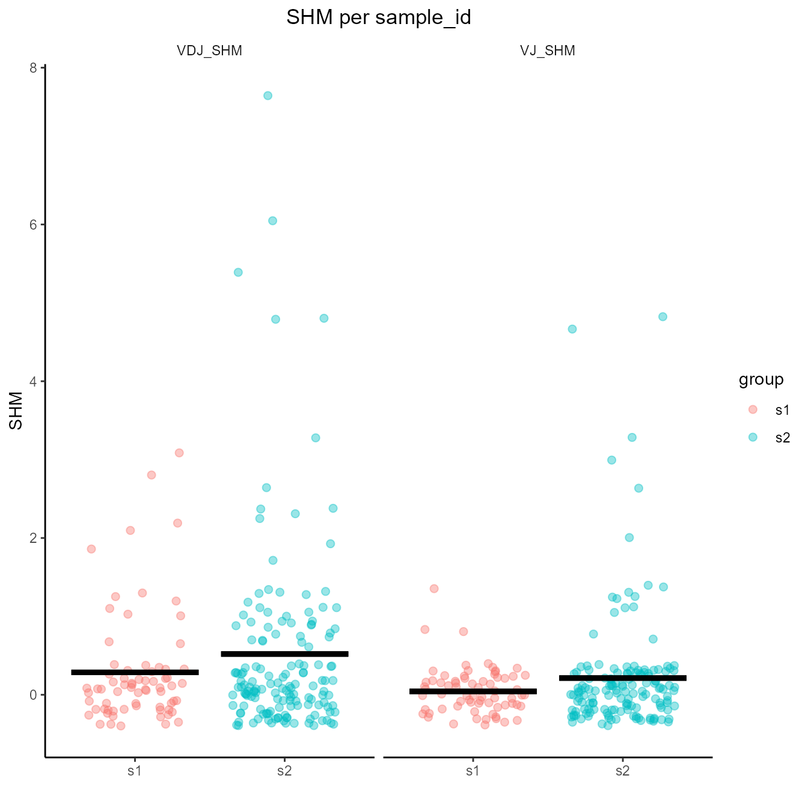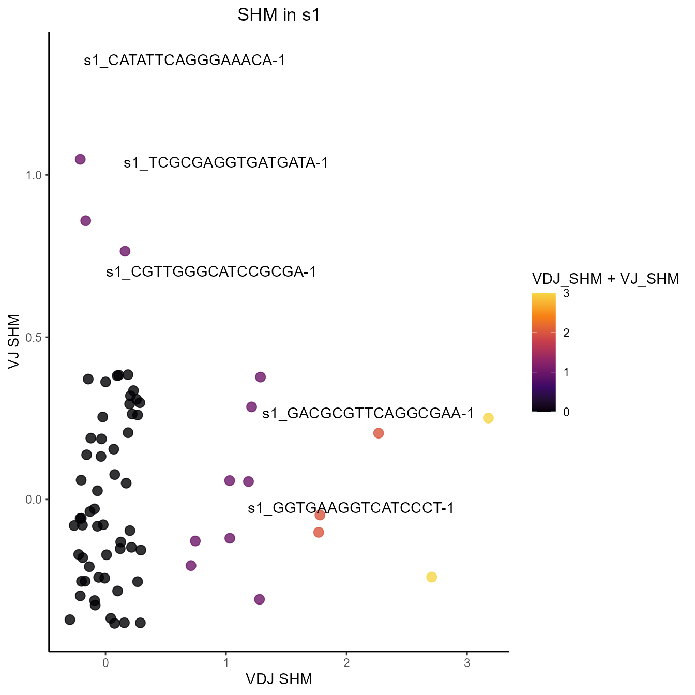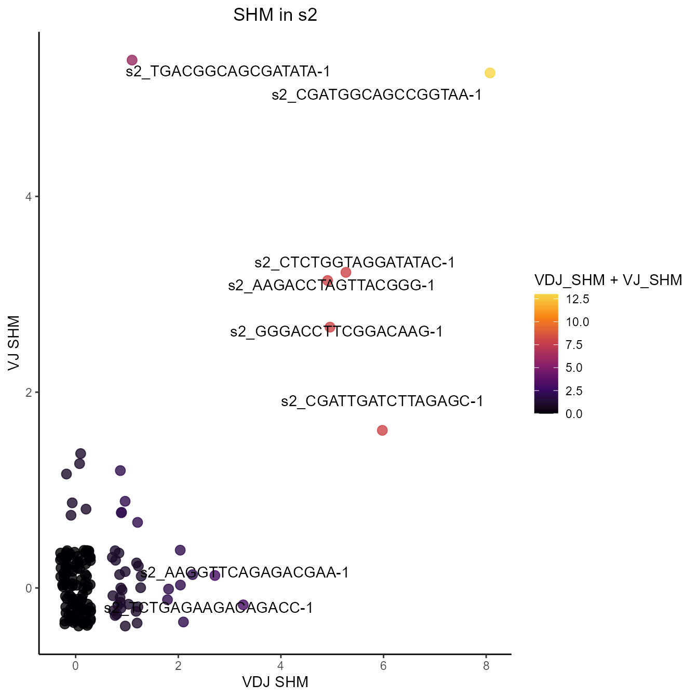
6.6 Extracting full-length germline sequence corresponding to the VDJRegion (Platypus V2)
! Only if MIXCR was used above. If germline sequences from the 10x Cellranger reference are to be used, refer to the vgm columns VDJ_trimmed_ref and VJ_trimmed_ref
Extracting the germline column can be accomplished using the VDJ_extract_germline, which takes the germline sequence as determined by cellranger. The output contains all the germline sequences in dataframe format for a given repertoire. The original clonotype identifier can be found in the descrR1 column, as seen below.
Because this function is not included in platypus version v3, it is commented out
#FOR MAC / UNIX users
#extracted_agedCNS_germline <- Platypus::VDJ_extract_germline(VDJ.per.clone=covid_single_cell,mixcr.directory="~/Downloads/mixcr-3.0.12/mixcr",extract.VDJRegion=T,species = "hsa")
#print(colnames(extracted_covid_germline[[1]][[1]])) ## column names of the germlines from the repertoire corresponding to sample 1
#print(nrow(extracted_covid_germline[[1]][[1]])) ## germline sequences corresponding to 2298 clones in the first patient
#print(nrow(extracted_covid_germline[[2]][[1]])) ## germline sequences corresponding to 2298 clones in the second patient. 6.7 Extracting trimmmed VDJ region sequence and germline (Platypus V2)
The function VDJ_per_clone additionally supplies trimmed VDJ sequences and the corresponding trimmed germline sequences in the case that the all_contig_annotations.json file is available. This can be useful to compute the somatic hypermutation rate only on the VDJ region for single cells in the clonotype. The columns named “full_seq_”, “sequence_”, and “trimmed_ref_” represent the sequence returned from the fasta files from cellranger, the sequence trimmed at the VDJ region, and the germline sequence trimmed at the VDJ region (followed by HC for Heavy Chain and LC for Light Chain). This data does not require MiXCR alignment, however, it is not necessarily starting at Framework1 so please use with caution if future plans involve cloning BCR/TCR. We have commented this out as the test data did not include the JSON file at the time.
#single_clone_with_JSON <- VDJ_per_cell(clonotype.list = vdj_repertoire_bcells,VDJ.out.directory =VDJ.out.directory.list,JSON = T)
# single_cell was the object from VDJ_per_clone
#print(single_clone_with_JSON[[1]][[1]]$trimmed_HC_sequence[1]) # trimmmed sequence
#print(single_clone_with_JSON[[1]][[1]]$trimmed_HC_germline[1]) # trimmmed germline sequence
#stringdist::stringdist(covid_single_clone_with_JSON[[1]][[1]]$sequence_HC[1], VDJ.per.cell[[1]][[1]]$trimmed_ref_HC[1]) 6.8 Organizing full-length sequences into clonal lineages easily exportable for phylogenetics.
After extracting the germline sequences and the full-length VDJRegion sequences, we can combine this information and group the sequences into clonal lineages that can individually be exported for downstream phylogenetics or into the VDJ_tree function within Platypus. The output list is similar to the output of other VDJ functions, in which the outer list element corresponds to the repertoire and the inner list element corresponds to the individual clone/clonal families. Here the heavy chain and light chain have been pasted together but in case one wants to separate them, the information can be found in the output of the VDJ_extract_germline function. For example, the output of the VDJ_extract_germline function above was extracted_germline[[1]][[1]]$VDJ.AA.HC.LC[2]. In this sequence there is a “" at the end of the heavy chain and light chain sequences. So one can split the strings at "” and use this sequence to create the phylogenetic trees.
#clonal_lineages <- Platypus::VDJ_clonal_lineages(call_MIXCR.output=vdj_region, VDJ_extract_germline.output=extracted_germline,as.nucleotide=F,with.germline=T)
#print(colnames(clonal_lineages[[1]][[1]])) ## dataframe with the columns Seq and Name.
#print(clonal_lineages[[1]][[1]]$Seq[1])
#print(clonal_lineages[[1]][[1]]$Name[1]) #"clonotype3_1_IGHA1_AACCATGAGTGGAGTC-1"
## Here we can see that the above sequence corresponds to the original clonotype3 but is now the first clonal lineage (as seen by the _1_ before the isotype). Furthermore, the isotype of this cell was of the IGHA1. Lastly, we have the barcode of the cell at the end, allowing us to look back at other cell-specific properties if wanted.
#print(clonal_lineages[[1]][[3]]$Name[3]) #"clonotype7_3_IGHA1_AGTGAGGTCGAGAACG-1"
## Again, this was originally the 7th clonotype, and is now the third most clonally expanded lineage ("_3_") of the IGHA1 isotype with given barcode.
#print(tail(covid_clonal_lineages[[1]][[3]]$Name)) ## here at the end of the dataframe the user can also see the germline sequence, which has the "Name" of "germline". 6.9 Neighbor-joining phylogenetic trees (Platypus V2)
The output of the VDJ_clonal_lineage function can be used as input to the VDJ_tree to produce quick, neighbor-joining phylogenetic trees. It is important that the VDJRegion is considered (or that the sequences from 10x have been trimmed) as this function does not involve a multiple string alignment - instead it creates a distance matrix from all sequences. The min number of unique sequences can be specified (e.g., if there are 50 cells in a clonal lineage, but only one unique antibody sequence, this tree will not be produced). Similarly, the max number of sequences can be specified, which will then result in random sampling from all sequences. Plotting the first tree we can see the that there is one variant (named Seq_1) that has 90 cells (seen by the Freq_90) and it is very close to the germline (Seq_6_Freq_1). We know it is the germline because it is the highest sequence variant and it is set as the root.
#trees <- VDJ_tree(clonal.lineages = clonal_lineages,with.germline=T,min.sequences = 5,max.sequences = 30,unique.sequences = T)
#plot(trees[[1]][[1]])7.1 Visualizing clonal frequencies (V3 only)
For a basic view of clonal expansion the VDJ_clonal_donut produces circular plots per sample. Label position and size should only be adjusted after deciding on a plot export format. This function uses the clonotype_id column as input. If VDJ_clonotyping function was used, its result are stored in that column. If not, the default 10x clonotyping is stored there. To retrieve default 10x clonotyping, use the column clonotyping_id_10x
donuts <- VDJ_clonal_donut(VDJ = vgm[[1]], expanded.colors = c("grey50", "grey65", "grey80"), non.expanded.color = "black", counts.to.use = "freq_column")## [1] "Using counts provided by 10X in the clonotype_frequency column"
## [1] "----------"
## [1] "Sample: s1"
## [1] "Clones: Expanded: 5 / 6.85%; 1 cell 68 / 93.15%; total: 73"
## [1] "Cells: Expanded: 10 / 12.82%; 1 cell 68 / 87.18%; Total: 78"
## [1] "----------"
## [1] "Sample: s2"
## [1] "Clones: Expanded: 14 / 10.85%; 1 cell 115 / 89.15%; total: 129"
## [1] "Cells: Expanded: 45 / 28.12%; 1 cell 115 / 71.88%; Total: 160"
#Counts to use = "freq_column" uses the counts in the clonotype_frequency column. Counts to use = "vgm" simply counts the rows of a given clonotype in the VGM table (these counts may differ if cells have been filtered out due to overlapping barcodes or if another clonotyping strategy was used)The black part shows cells in unexpanded clones. The rest shows expanded clones by their frequency. The middle label shows the total number of clones (cells)
7.2 Calculating common repertoire diversity metrics
This requires the Vegan package. We can calculate the diversity for any column(s) in the vgm. If more than one column is provided, the content will be pasted together before calculating diversity metrics
#Shannon Evenness for the VDJ chain CDR3
diversity_plot <- VDJ_diversity(VDJ = vgm[[1]],feature.columns = c("VDJ_cdr3s_aa"),grouping.column = "sample_id",metric = c("shannonevenness"), platypus.version = "v3", subsample.to.same.n = T)## [1] "Used group s1 as a reference for subsampling with 77 entries"
## [1] "To avoid subsampling set subsample.to.same.n = FALSE"
## [1] "Subsampled group s2 to 77 entries"
diversity_plot
#Gini-Simpson index for pasted VDJ and VJ chain CDR3s
diversity_plot <- VDJ_diversity(VDJ = vgm[[1]],feature.columns = c("VDJ_cdr3s_aa", "VJ_cdr3s_aa"),grouping.column = "sample_id",metric = c("ginisimpson"), platypus.version = "v3", subsample.to.same.n = T)## [1] "Used group s1 as a reference for subsampling with 69 entries"
## [1] "To avoid subsampling set subsample.to.same.n = FALSE"
## [1] "Subsampled group s2 to 69 entries"## index groups metric colors
## 1 Gini-Simpson index s1 0.9838269 #FF0000
## 2 Gini-Simpson index s2 0.9808864 #00FFFF
#Jaccard index between repertoires of the two samples
diversity_plot <- VDJ_diversity(VDJ = vgm[[1]],feature.columns = c("VDJ_cgene"),grouping.column = "sample_id",metric = c("jaccard"), platypus.version = "v3", subsample.to.same.n = T)
diversity_plot 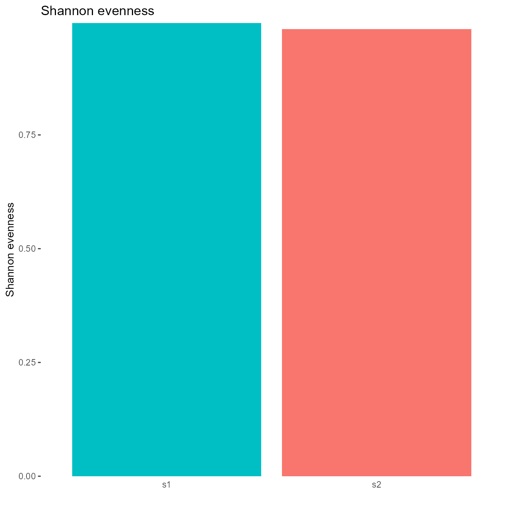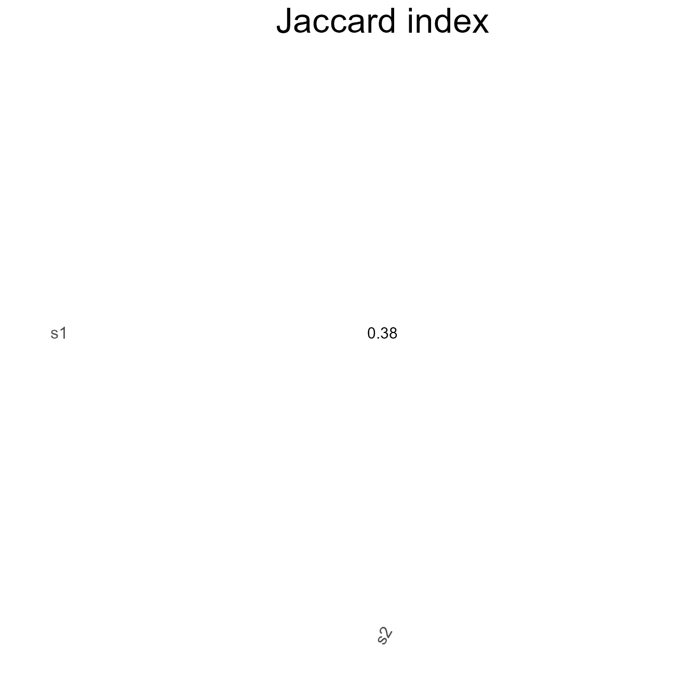
7.3 Examining isotypes
Additional VDJ functions include plotting the clonal expansion for each clone. This can be performed by the VDJ_clonal_expansion function and setting the number of clones to show.
The function has two operating modes: Set color.by to “isotype” to exctract and color bars by isotype. Set subtypes to TRUE to view IgG subtypes. Set color.by to any other column in vgm[[1]] to examine the distribution of other parameters (This will be used during VDJ - GEX integration)
The following code extracts and plots the isotype distribution of the top 30 clones. We can see a clear IgA isotype majority of the top four clones in the first patient when using the default clonotyping strategy. We can additionally use the new clonotyping strategies to compare how changing the clonal defintion impacts the clonal expansion profiles. We simply supply the output from VDJ_clonotype
clonal_out <- VDJ_clonal_expansion(VDJ = vgm[[1]],celltype = "Bcells",clones = "30", platypus.version = "v3", group.by = "sample_id", color.by = "isotype", isotypes.to.plot = "all", treat.incomplete.clones = "exclude", treat.incomplete.cells = "proportional")## [1] "For sample s2 removing 12 clones of which no cell contains a VDJ chain which is 9.3 % of all clones"
#group by specifies how many separate plots should be generated. If vgm contains global clonotype information this can be set to "none"
print(clonal_out[[1]])## [[1]]##
## [[2]]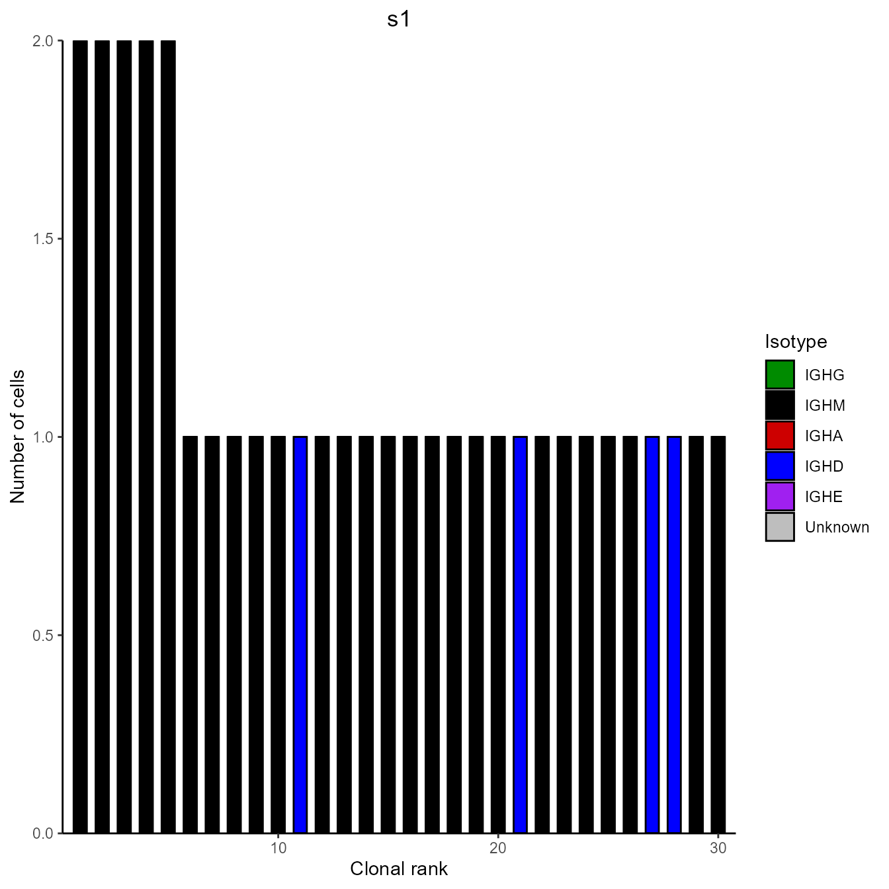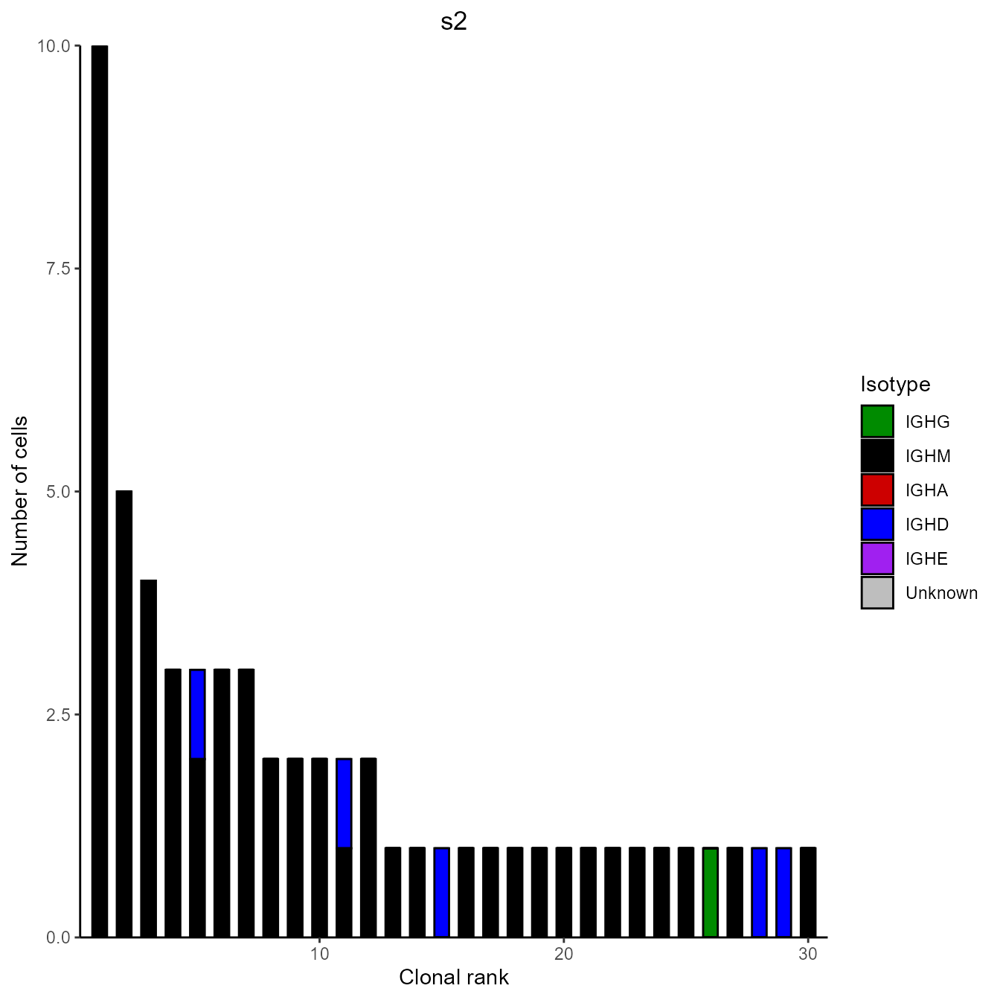
7.4 Sequence similarity networks
Other functions are specifically tailored to repertoire analysis - such as VDJ_network, which creates a sequence similarity network between repertoires or within a repertoire by connecting those clones with sequence similarity. This function relies upon igraph to visually display and construct the graph - which means that networks with high number of sequences will not display easily. In the following example we are using a small dataset. In case of a bigger dataset one may subsample by using the sample.n function on vgm[[1]]. Setting the per.mouse argument to false indicates that one network for multiple repertoires should be produced.
#subsampled_VGM <- dplyr::sample_n(vgm[[1]], 60)
agedCNS_igraph <- VDJ_network(VDJ = vgm[[1]],per.sample = T,distance.cutoff = 8, platypus.version = "v3")## [1] "Sample order: s1 ; s2"
for(i in 1:2){
igraph::plot.igraph(agedCNS_igraph[[1]][[i]],vertex.label=NA,vertex.size=7)
}
#For a plot including clonotype frequencies
agedCNS_igraph <- VDJ_network(VDJ = vgm[[1]],per.sample = F,distance.cutoff = 8, platypus.version = "v3")
igraph::plot.igraph(agedCNS_igraph[[4]],vertex.label=NA,vertex.size=3+(.03*as.numeric(agedCNS_igraph[[2]]$clonotype_frequency)),vertex.color= as.factor(vgm[[1]]$sample_id))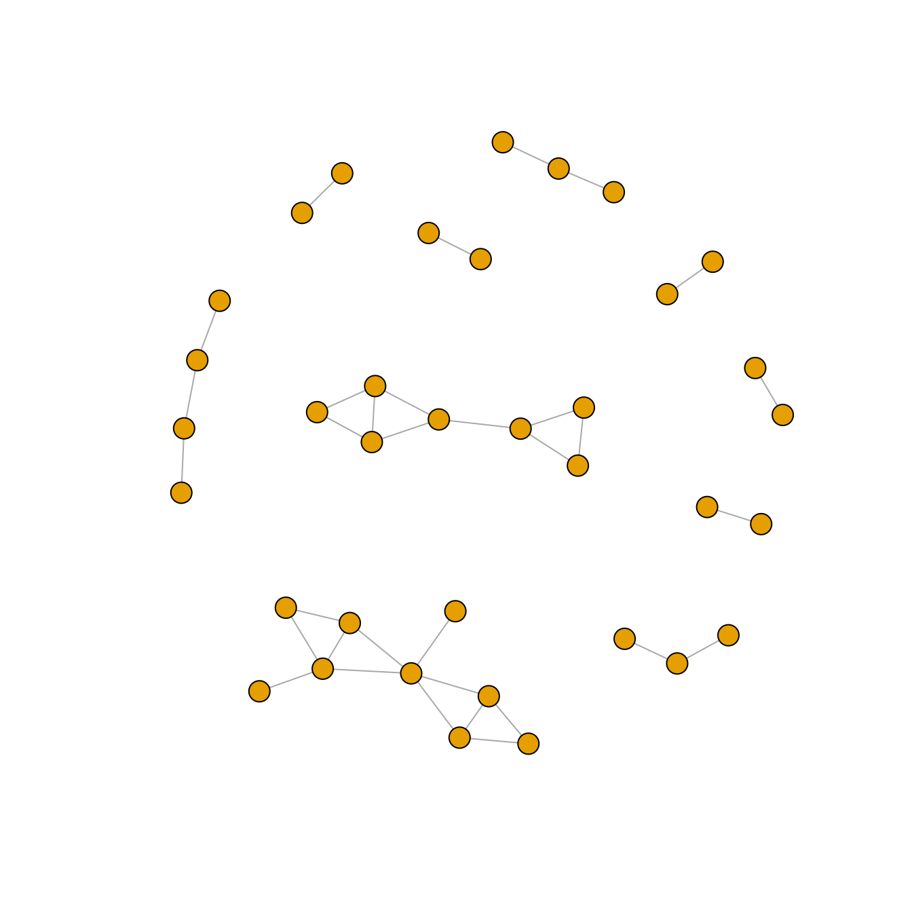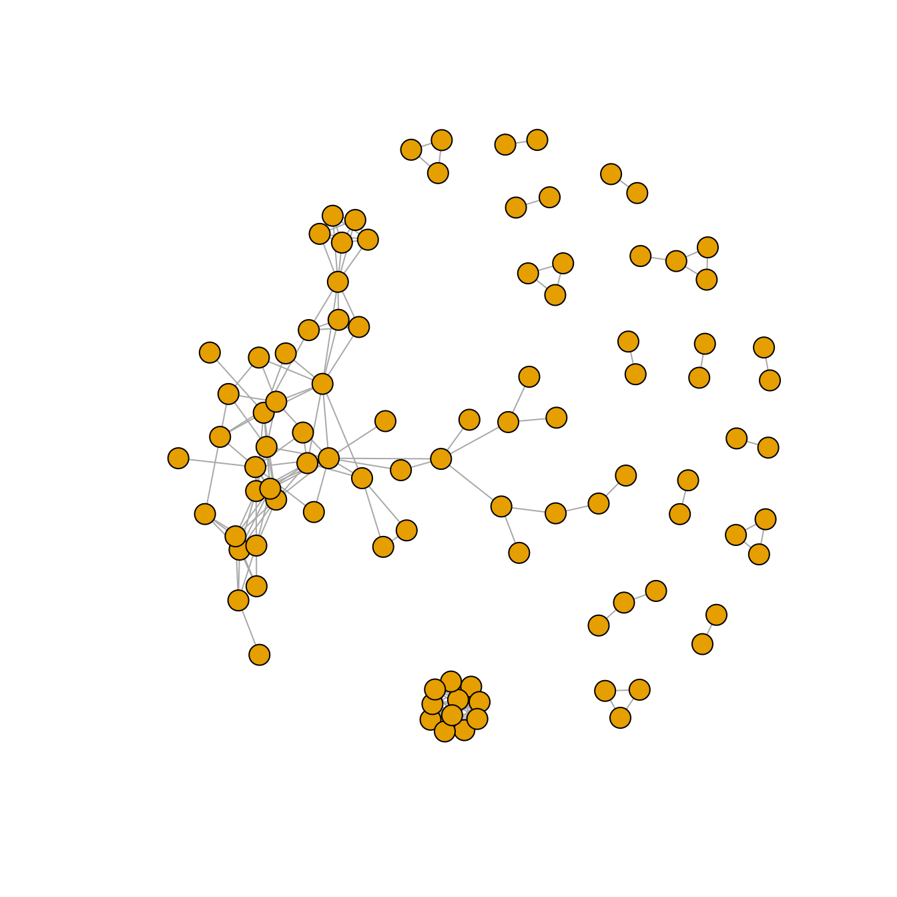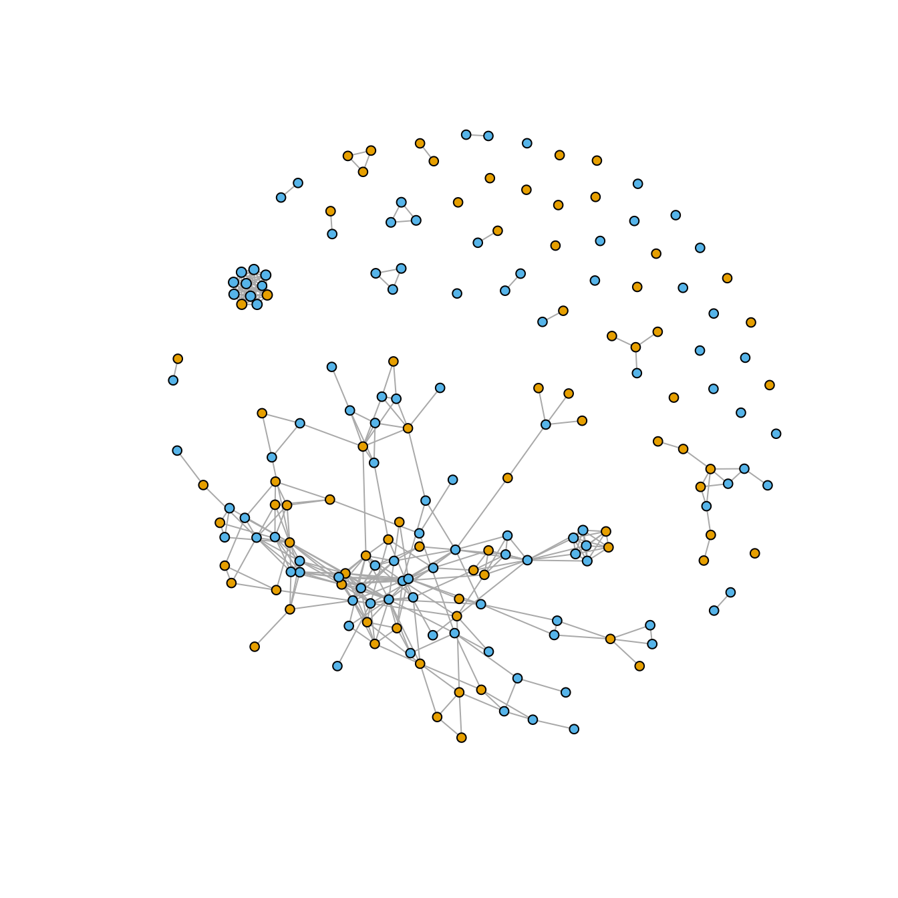
For more details see the documentation of the VDJ_network function, but essentially information such as clonal frequency and which sample (here still indicated by the “sample_id” column) are stored in the second element of the output list. Here we can see only a few clones that are showing connections (produced by edges between those with a distance of 8 amino acids or less between heavy and light chain paired CDR3 sequence homology)
7.5 Germline gene usage heatmaps
It is also possible to produce heatmaps of the germline gene usage in the context of heavy chain V gene and light chain V gene. The output of the VDJ_Vgene_usage function is a matrix for each repertoire corresponding to the order specified by VDJ_analyze. The outer list corresponds to the sample and the inner list corresponds to a matrix, where the rows correspond to the heavy chain V genes and the columns correspond to the light chains of the V genes. Therefore the output[[1]][i,j] corresponds to the number of clones using the combination of IGH-Vgene[i] and IGK/L-Vgene[j].
#First calculate adjacency matrix for V gene usage
agedCNS_Vgene_usage <- VDJ_Vgene_usage(VDJ = vgm[[1]], platypus.version = "v3")
#library(pheatmap)
pheatmap::pheatmap(agedCNS_Vgene_usage[[1]],show_rownames = F,show_colnames = F)
print(class(agedCNS_Vgene_usage[[1]]))## [1] "matrix" "array"## [1] "IGHV8-8" "IGHV1-9" "IGHV1-26" "IGHV14-1" "IGHV5-17" "IGHV5-16"## [1] "IGKV10-96" "IGKV6-32" "IGKV19-93" "IGKV8-24" "IGKV1-110" "IGKV4-55"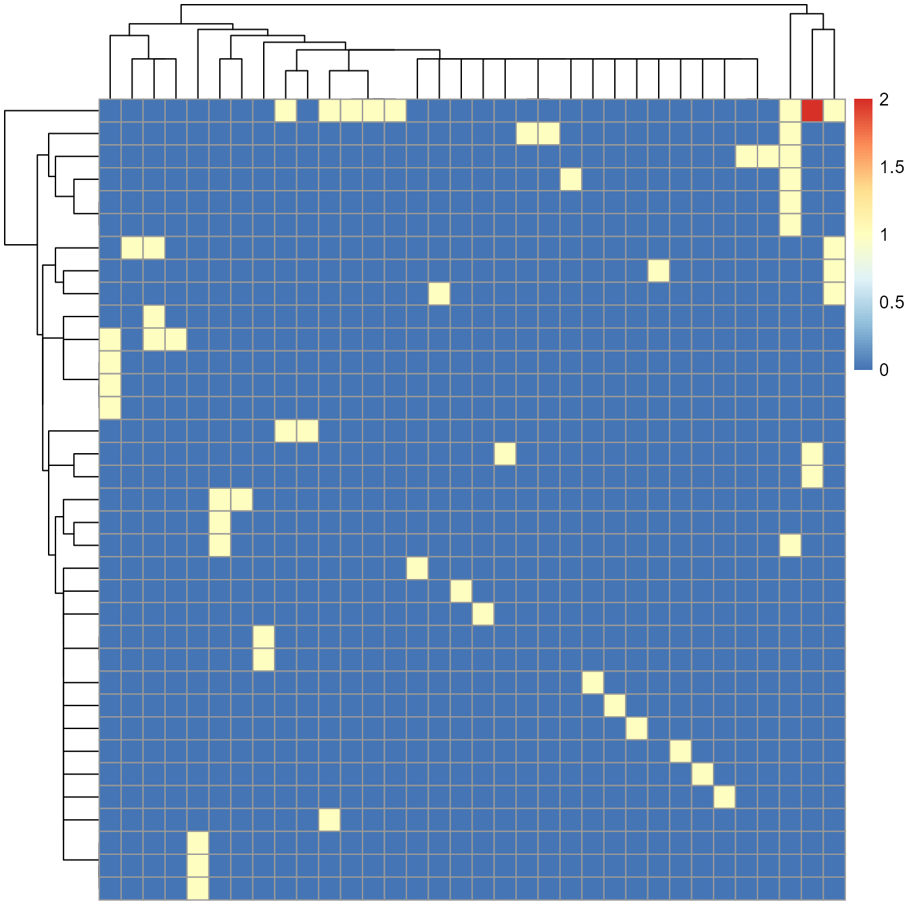 This can then be easily plotted as a heatmap to observe patterns between repertoires or can be used to calculate V gene correlation using the “pheatmap” package.
Platypus also allows a separate analysis of V gene usage for HC and LC. The VDJ_Vgene_usage_barplot allows the user to plot most frequently used IgH or IgK/L V genes. By default, this function only provides visualizations for the HC V genes, but can also provide for the LC if LC. Vgene is set to TRUE. The User can also select the number of most used genes to be depicted.
agedCNS_Vgene_usage_barplot <- VDJ_Vgene_usage_barplot(VDJ = vgm[[1]], HC.gene.number = 10, LC.Vgene = T, LC.gene.number = 10, platypus.version = "v3")## [1] "Sample order: s1 ; s2"
agedCNS_Vgene_usage_barplot[[1]]
#VDJ chains
agedCNS_Vgene_usage_stackedbarplot <- VDJ_Vgene_usage_stacked_barplot(VDJ = vgm[[1]], LC.Vgene = F,HC.gene.number = 10, Fraction.HC = 1, platypus.version = "v3")## [1] "Sample order: s1 ; s2"
agedCNS_Vgene_usage_stackedbarplot 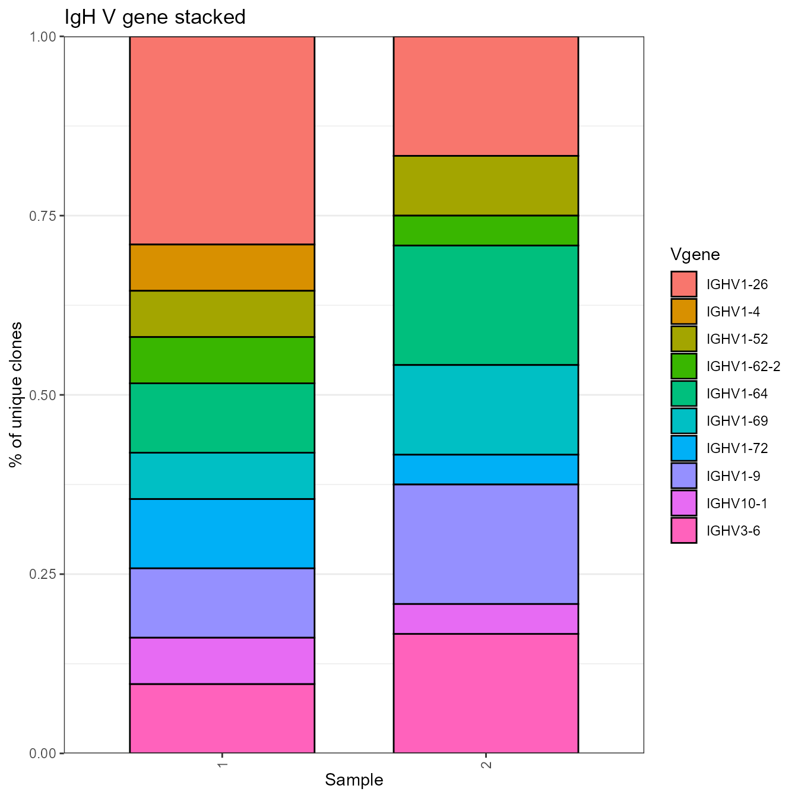
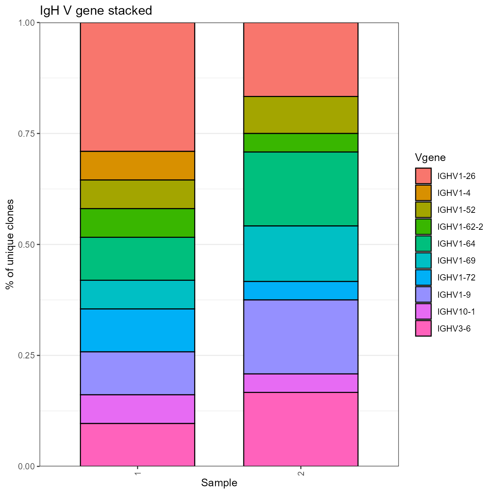
Furthermore, we can also produce a circular visualization of how V and J genes are combined throughout the repertoire. In the example that follows we use VDJ_VJ_usage_circos to look at the V gene with the corresponding J gene for each expanded clonotype.
#VDJ and VJ V and J gene pairing
vj_circos_bcells <- VDJ_VJ_usage_circos(VDJ = vgm[[1]], c.threshold = 1,label.threshold=2,cell.level = T, A.or.B = "both", platypus.version = "v3")## [1] "Reminder: VDJ_VJ_usage_circos() funcion built for new Platypus 3.0.0 is being used. The output VDJ dataframe of the VDJ_GEX_matrix function (VDJ_GEX_matrix[[1]]) required as input."
## [1] "Plotting for sample s1"
## [1] "Plotting for sample s2"
#VDJ and VJ pairing
HL_circos_bcells <- VDJ_alpha_beta_Vgene_circos(VDJ = vgm[[1]], c.threshold = 1,label.threshold=2,cell.level = T, V.or.J= "both", platypus.version = "v3")## [1] "Reminder: VDJ_VJ_usage_circos() funcion built for new Platypus v3.0.0 is being used. VDJ output of VDJ_GEX_matrix() is required as input. (VDJ_GEX_matrix.output[[1]])"
## [1] "Bcells used"
## [1] "Plotting for sample s1"
## [1] "Plotting for sample s2"
## [1] "---"
## [1] "---"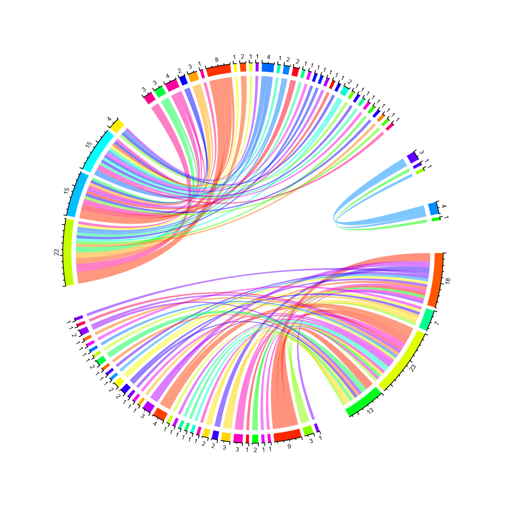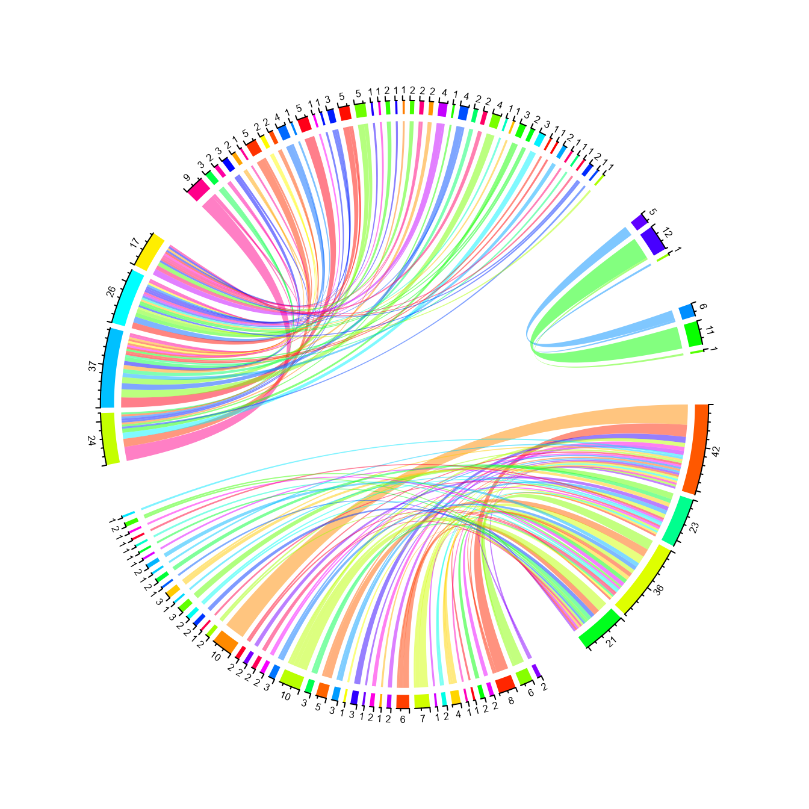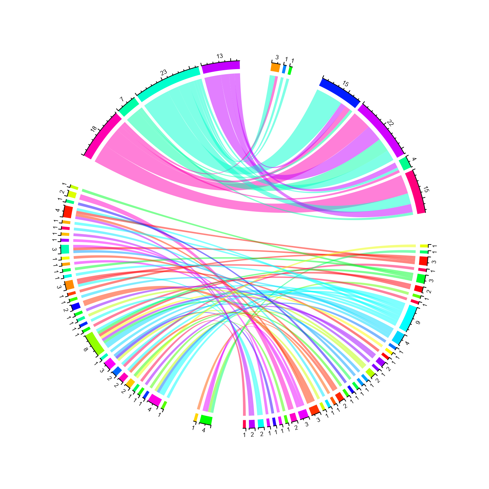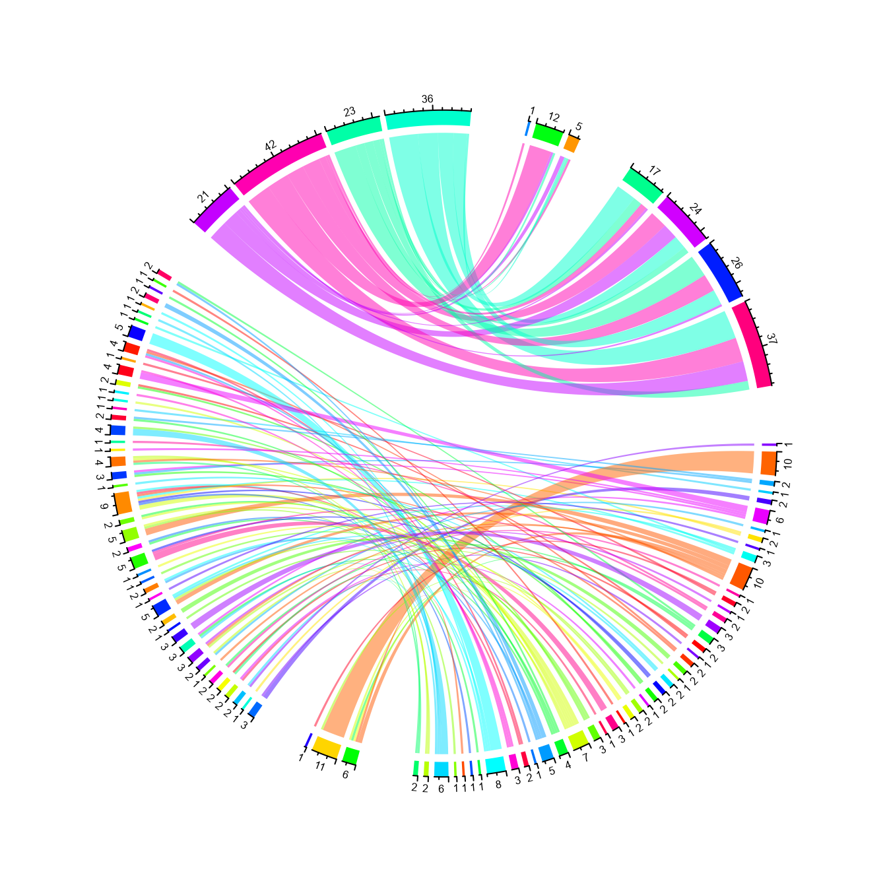
7.6 Assessing CDR3 sequence similarity
Finally, one can also look at any specific HC and LC CDR3 amino acid patterns arising across the different clones. Using the VDJ_logoplot_vector function the user can plot a logoplot of the CDR3 region od a certain length, specyfied by the length_cdr3 argument. For instance, the logoplot below corresponds to all those CDR3 aminoacid sequences of length 25
pasted_CDR3s <- paste0(vgm[[1]]$VDJ_cdr3s_aa, vgm[[1]]$VJ_cdr3s_aa)
agedCNS_CDR3_logoplot <- VDJ_logoplot_vector(cdr3.vector = pasted_CDR3s, seq_type = "aa", length_cdr3 = "auto")## [1] "Length distribution of input sequences"
##
## 9 11 12 13 14 15 16 17 18 19 20 21 22 23 24 25 26 27 28 29 30 31 33 34 36 37
## 1 18 5 5 2 3 1 1 2 4 2 4 14 13 27 28 28 14 33 6 5 3 1 3 3 3
## 38 39 40 44 49 51 52
## 3 1 1 1 1 1 1
## [1] "Returning logoplot based on 33 sequences of a total 238 input sequences"
print(agedCNS_CDR3_logoplot)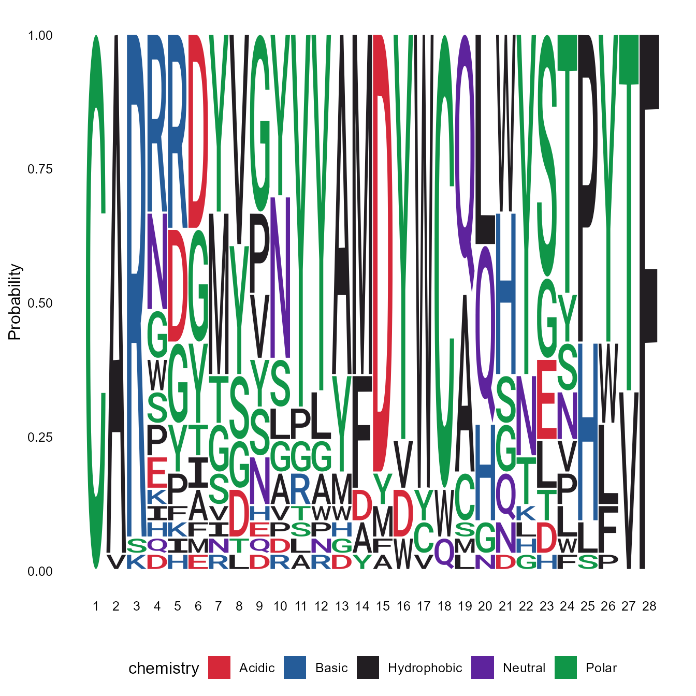
7.7. Assessing Nr of variants per clone
Depending on the clonotype strategy, within a clone several different variants of CDR3s or full length sequences may be contained. To count variants, the function VDJ_variants_per_clone is used. It returns a table per sample_id with stats about variants
variants_agedCNS <- VDJ_variants_per_clone(VDJ = vgm[[1]], variants.of = c("VDJ_cdr3s_aa", "VJ_cdr3s_aa"), clonotypes.col = "clonotype_id_10x", split.by = "sample_id", stringDist.method = "levenshtein")
head(variants_agedCNS[[1]])## split_group clonotype_id n sequences n variants mean variants distance
## 1 s1 clonotype7 1 1 NA
## 2 s1 clonotype58 1 1 NA
## 3 s1 clonotype65 1 1 NA
## 4 s1 clonotype43 1 1 NA
## 5 s1 clonotype33 1 1 NA
## 6 s1 clonotype49 1 1 NA
## max variants distance min variants distance most frequent variant
## 1 NA NA CARIGYAMDYW/CQQGNTLPPTF
## 2 NA NA CARDFTTVVARGYFDVW/CQQDYSSPWTF
## 3 NA NA CARGITTVVAYYYAMDYW/CLQYDNLYTF
## 4 NA NA CTTGPYDYYAMDYW/CQQHYSTPYTF
## 5 NA NA CARPHDYDGVDYW/CSQSTHVPPWTF
## 6 NA NA CARRYYSNYAWFAYW/CQQWSSYPYTF
## n VDJ cgene variants most frequent VDJ cgene
## 1 1 IGHM
## 2 1 IGHD
## 3 1 IGHD
## 4 1 IGHD
## 5 1 IGHM
## 6 1 IGHM
#set split.by to "none" if clonotyping was conducted across all samples7.8. Searching for overlap between repertoires
Public clones or sequences are sequences that are shared between individuals. The VDJ_overlap_heatmap function can quantify this overlap and return a list of overlapping items
#overlap of VDJ V genes
VDJv_overlap <- VDJ_overlap_heatmap(VDJ = vgm[[1]],feature.columns = c("VDJ_vgene") ,grouping.column = "sample_id", axis.label.size = 20, pvalues.label.size = 12, platypus.version = "v3", add.barcode.table = T, plot.type = "ggplot")
VDJv_overlap[[2]] #summary of overlap## sample.names.1. sample.names.2. overlap
## 1 s1 s2 30
## items.overlapping
## 1 IGHV8-8;IGHV1-9;IGHV1-26;IGHV5-17;IGHV5-16;IGHV1-54;IGHV1-72;IGHV1-64;IGHV5-9-1;IGHV1-19;IGHV1-18;IGHV8-5;IGHV3-6;IGHV1-52;IGHV1-80;IGHV1-74;IGHV1-39;IGHV1-22;IGHV10-1;IGHV1-62-2;IGHV9-3;IGHV1-53;IGHV1-69;IGHV9-1;IGHV1-76;IGHV1-50;IGHV1-81;IGHV1-12;IGHV1-82;IGHV1-85
## overlap_lab
## 1 30
VDJv_overlap[[2]] #Table of overlapping items## sample.names.1. sample.names.2. overlap
## 1 s1 s2 30
## items.overlapping
## 1 IGHV8-8;IGHV1-9;IGHV1-26;IGHV5-17;IGHV5-16;IGHV1-54;IGHV1-72;IGHV1-64;IGHV5-9-1;IGHV1-19;IGHV1-18;IGHV8-5;IGHV3-6;IGHV1-52;IGHV1-80;IGHV1-74;IGHV1-39;IGHV1-22;IGHV10-1;IGHV1-62-2;IGHV9-3;IGHV1-53;IGHV1-69;IGHV9-1;IGHV1-76;IGHV1-50;IGHV1-81;IGHV1-12;IGHV1-82;IGHV1-85
## overlap_lab
## 1 30
#overlap of clones
VDJv_overlap <- VDJ_overlap_heatmap(VDJ = vgm[[1]],feature.columns = c("VDJ_cdr3s_aa","VJ_cdr3s_aa") ,grouping.column = "sample_id", axis.label.size = 20, pvalues.label.size = 12, platypus.version = "v3", add.barcode.table = T, plot.type = "ggplot")
#Pheatmap plots will function only with length(unique(grouping.column)) > 3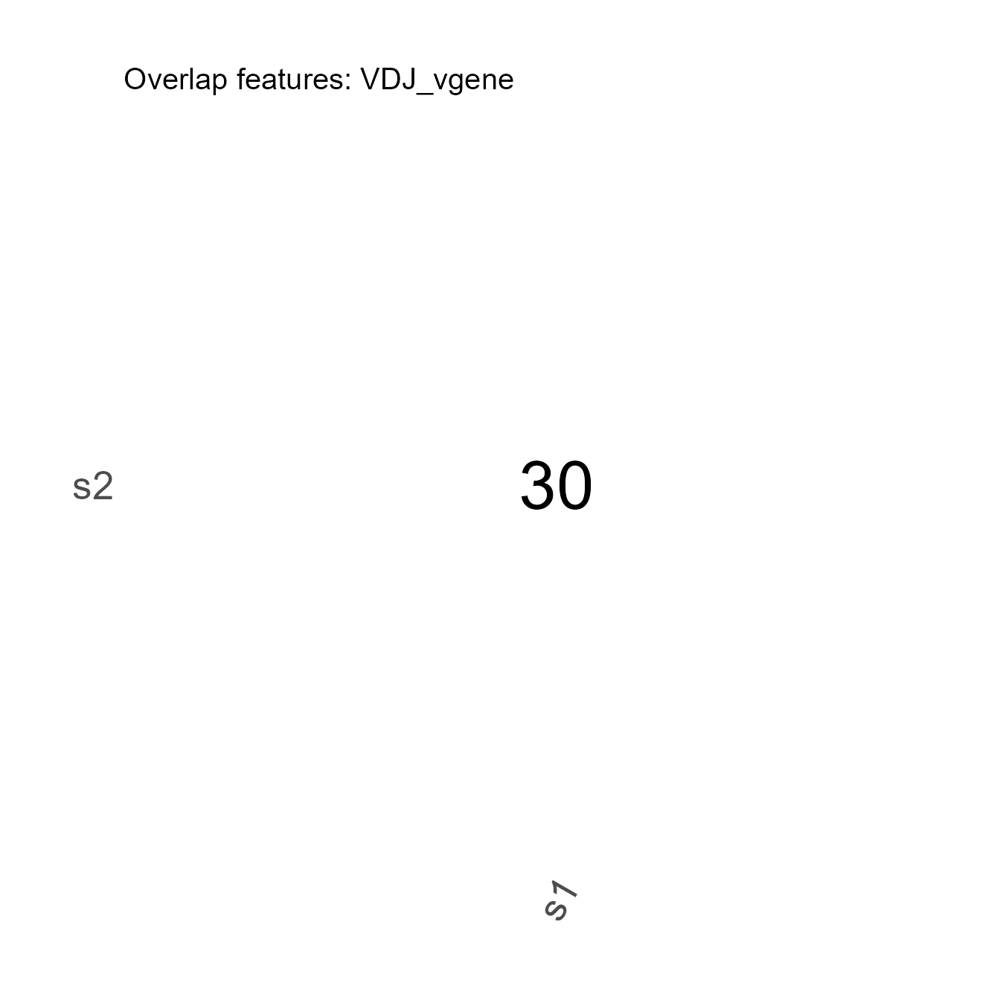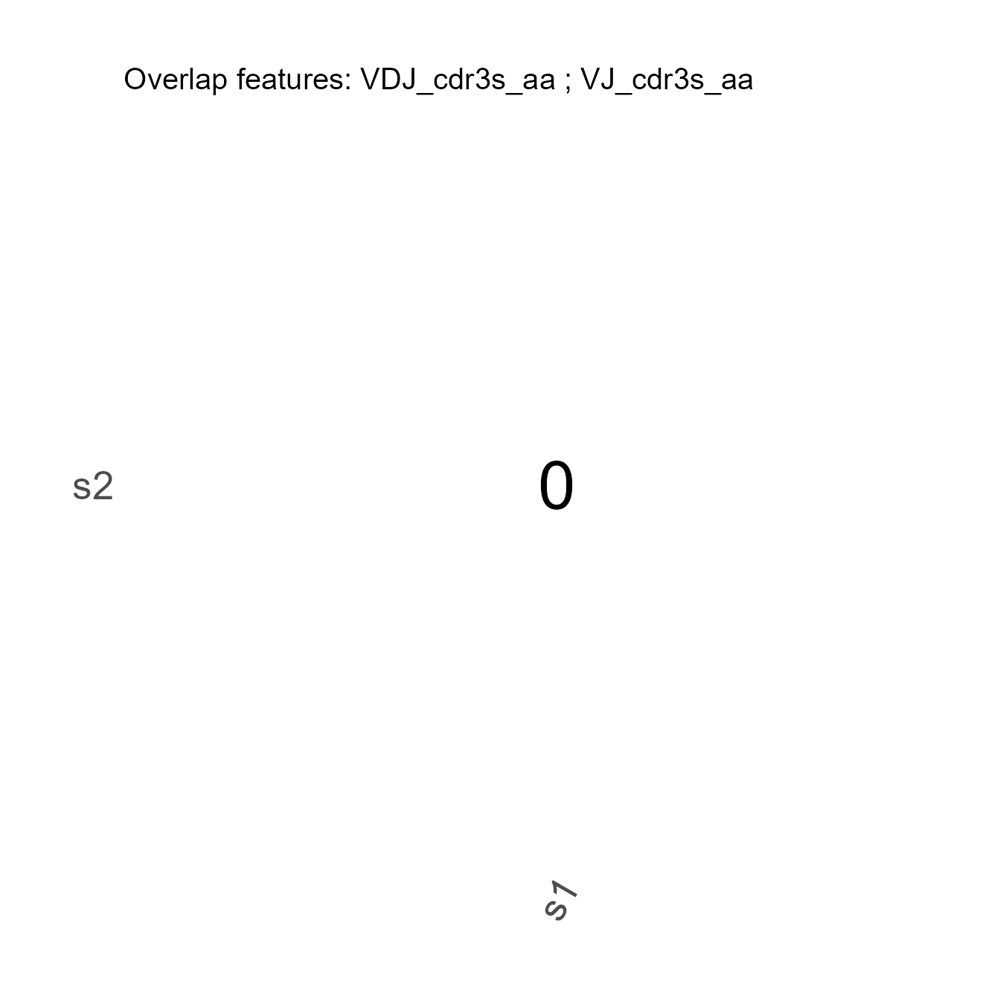 Given the small size of the two repertoires, it is unsurprising that no clones are shared
8. Integrating repertoire and gene expression
The strength of the current 5’ sequencing protocols are that the gene expression (GEX) and repertoire (VDJ) libraries are extracted from the same sample, which can then be linked back to demonstrate that a given T cell has a certain gene expression pattern and also a certain T cell receptor sequence. The following functions are meant to integrate these two pieces of information.
8.1. Integrating transcriptional clusters to the VDJ objects
One thing we may ask is how similar the B or T cells in a given clonal family are on the transcriptional level. The basic work of matching barcodes from V(D)J sequencing to those from GEX sequencing was already done in the VGM function. This part is therefore dedicated to functions that help explore and exploite this data
First we get basic stats on the overlap between GEX and VDJ
#Nr of cells for which VDJ info is available
nrow(vgm[[1]])## [1] 238
#Nr of cells for which GEX info is available
ncol(vgm[[2]])## [1] 526
#VDJ sequences for which GEX is available
sum(vgm[[2]]$VDJ_available)## [1] 201
#We can also plot this
Seurat::DimPlot(vgm[[2]],reduction = "umap", group.by = "VDJ_available", shuffle = T)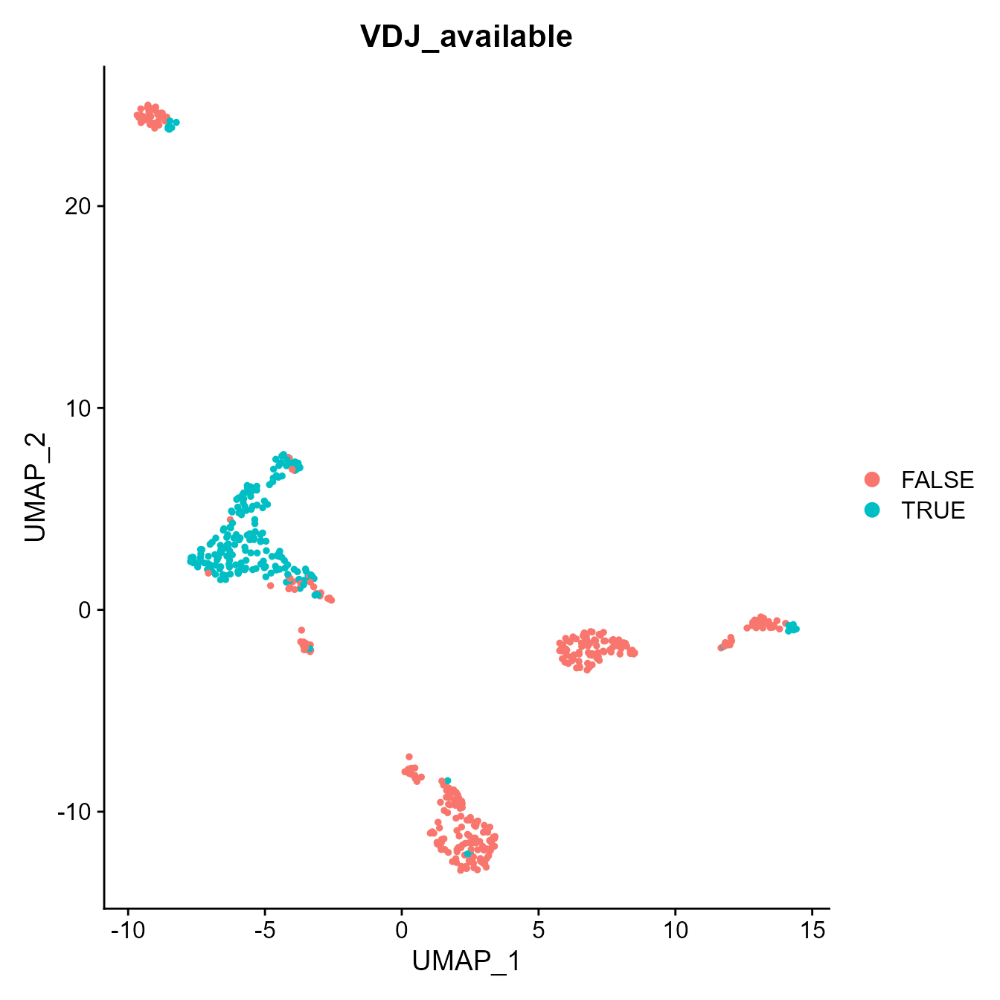
8.2. Relating clonal expansion to transcriptional cluster membership
The VDJ_clonal_expansion function has been used above to plot isotype information. Here its exdented functionality is used to color clones by their transcriptional cluster
clonal_out <- VDJ_clonal_expansion(VDJ = vgm[[1]],celltype = "Bcells",clones = "30", platypus.version = "v3", group.by = "sample_id", color.by = "seurat_clusters")## [1] "For sample s2 removing 12 clones of which no cell contains a VDJ chain which is 9.3 % of all clones"
#group by specifies how many separate plots should be generated. If vgm contains global clonotype information this can be set to "none"
print(clonal_out[[1]][[2]])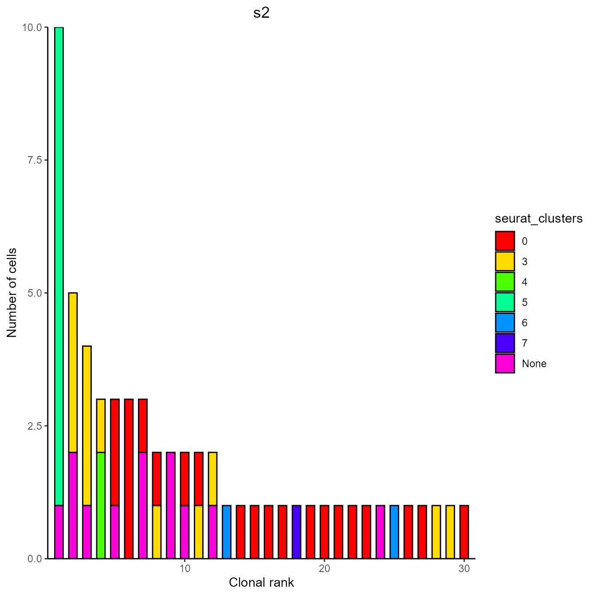
Similar plots can be generated using the GEX_phenotype_per_clone function
clonal_out <- GEX_phenotype_per_clone(GEX = vgm[[2]], GEX.clonotypes = "topclones", GEX.group.by = "seurat_clusters", platypus.version = "v3")## [1] "Selected clonotype5" "Selected clonotype3" "Selected clonotype4"
## [4] "Selected clonotype1" "Selected clonotype2" "Selected clonotype58"
## [7] "Selected clonotype65"
## clonotype_id variable value
## 1 clonotype5 3 100
## 2 clonotype3 3 0
## 3 clonotype4 3 100
## 4 clonotype1 3 0
## 5 clonotype2 3 0
## 6 clonotype58 3 100
## 7 clonotype65 3 0
## 8 clonotype5 2 0
## 9 clonotype3 2 0
## 10 clonotype4 2 0
## 11 clonotype1 2 0
## 12 clonotype2 2 0
## 13 clonotype58 2 0
## 14 clonotype65 2 0
## 15 clonotype5 4 0
## 16 clonotype3 4 0
## 17 clonotype4 4 0
## 18 clonotype1 4 0
## 19 clonotype2 4 0
## 20 clonotype58 4 0
## 21 clonotype65 4 0
## 22 clonotype5 6 0
## 23 clonotype3 6 0
## 24 clonotype4 6 0
## 25 clonotype1 6 0
## 26 clonotype2 6 0
## 27 clonotype58 6 0
## 28 clonotype65 6 0
## 29 clonotype5 5 0
## 30 clonotype3 5 0
## 31 clonotype4 5 0
## 32 clonotype1 5 0
## 33 clonotype2 5 0
## 34 clonotype58 5 0
## 35 clonotype65 5 0
## 36 clonotype5 0 0
## 37 clonotype3 0 100
## 38 clonotype4 0 0
## 39 clonotype1 0 50
## 40 clonotype2 0 100
## 41 clonotype58 0 0
## 42 clonotype65 0 100
## 43 clonotype5 1 0
## 44 clonotype3 1 0
## 45 clonotype4 1 0
## 46 clonotype1 1 0
## 47 clonotype2 1 0
## 48 clonotype58 1 0
## 49 clonotype65 1 0
## 50 clonotype5 7 0
## 51 clonotype3 7 0
## 52 clonotype4 7 0
## 53 clonotype1 7 50
## 54 clonotype2 7 0
## 55 clonotype58 7 0
## 56 clonotype65 7 0
## [1] "Selected clonotype1" "Selected clonotype2"
## clonotype_id variable value
## 1 clonotype1 3 0
## 2 clonotype2 3 100
## 3 clonotype1 0 0
## 4 clonotype2 0 0
## 5 clonotype1 6 0
## 6 clonotype2 6 0
## 7 clonotype1 7 0
## 8 clonotype2 7 0
## 9 clonotype1 2 0
## 10 clonotype2 2 0
## 11 clonotype1 5 100
## 12 clonotype2 5 0
## 13 clonotype1 4 0
## 14 clonotype2 4 0
## 15 clonotype1 1 0
## 16 clonotype2 1 0
#If vgm contains global clonotype information this can be set global.clonotypes to TRUE
clonal_out[[1]]
8.3. Visualizing clones on the 2 dimensional landscape
To better visualize this, the cells of any clone can also be highlighted on a dimensional reduction
Because the legend of these plots can get quite large, we can split the plot and the legend and draw them separately. For this the gridExtra and cowplot package is required
#here we overlay the top 5 clones
plot_out <- VDJ_GEX_overlay_clones(GEX = vgm[[2]], reduction = "umap", n.clones = 5, by.sample = F, ncol.facet = 1, split.plot.and.legend = F, pt.size = 0.5)## s_cl sample_id group_id clonotype_id_10x
## s1_AAGGCAGTCTCTGCTG-1 s1clonotype58 s1 1 clonotype58
## s1_AATCGGTTCTTCTGGC-1 s1NA s1 1 <NA>
## s1_ACAGCTACAGTCGTGC-1 s1clonotype65 s1 1 clonotype65
## s1_ACTTGTTGTACTTAGC-1 s1clonotype43 s1 1 clonotype43
## s1_AGAGCTTGTCATGCAT-1 s1clonotype33 s1 1 clonotype33
## s1_AGAGTGGAGGAGTCTG-1 s1clonotype49 s1 1 clonotype49
## clonotype_frequency
## s1_AAGGCAGTCTCTGCTG-1 1
## s1_AATCGGTTCTTCTGGC-1 NA
## s1_ACAGCTACAGTCGTGC-1 1
## s1_ACTTGTTGTACTTAGC-1 1
## s1_AGAGCTTGTCATGCAT-1 1
## s1_AGAGTGGAGGAGTCTG-1 1
plot_out[[1]] # the plot
#We can also plot any clone of interest by adding a column were TRUE values select which clones are to be plotted
interesting_clones <- c("clonotype7", "clonotype42")
vgm[[2]]@meta.data$clones_to_plot <- FALSE
vgm[[2]]@meta.data$clones_to_plot[which(vgm[[2]]$clonotype_id_10x %in% interesting_clones)] <- TRUE
plot_out <- VDJ_GEX_overlay_clones(GEX = vgm[[2]], reduction = "umap", clones.to.plot = "clones_to_plot", by.sample = F, ncol.facet = 1, split.plot.and.legend = T, pt.size = 0.5)## s_cl sample_id group_id clonotype_id_10x
## s1_AAGGCAGTCTCTGCTG-1 s1clonotype58 s1 1 clonotype58
## s1_AATCGGTTCTTCTGGC-1 s1NA s1 1 <NA>
## s1_ACAGCTACAGTCGTGC-1 s1clonotype65 s1 1 clonotype65
## s1_ACTTGTTGTACTTAGC-1 s1clonotype43 s1 1 clonotype43
## s1_AGAGCTTGTCATGCAT-1 s1clonotype33 s1 1 clonotype33
## s1_AGAGTGGAGGAGTCTG-1 s1clonotype49 s1 1 clonotype49
## clonotype_frequency clonotype_to_plot
## s1_AAGGCAGTCTCTGCTG-1 1 FALSE
## s1_AATCGGTTCTTCTGGC-1 NA FALSE
## s1_ACAGCTACAGTCGTGC-1 1 FALSE
## s1_ACTTGTTGTACTTAGC-1 1 FALSE
## s1_AGAGCTTGTCATGCAT-1 1 FALSE
## s1_AGAGTGGAGGAGTCTG-1 1 FALSE
plot_out[[1]] # the plot
plot(plot_out[[2]]) # the legend. Alternatively use gridExtra::grid.arrange(plot_out[[2]])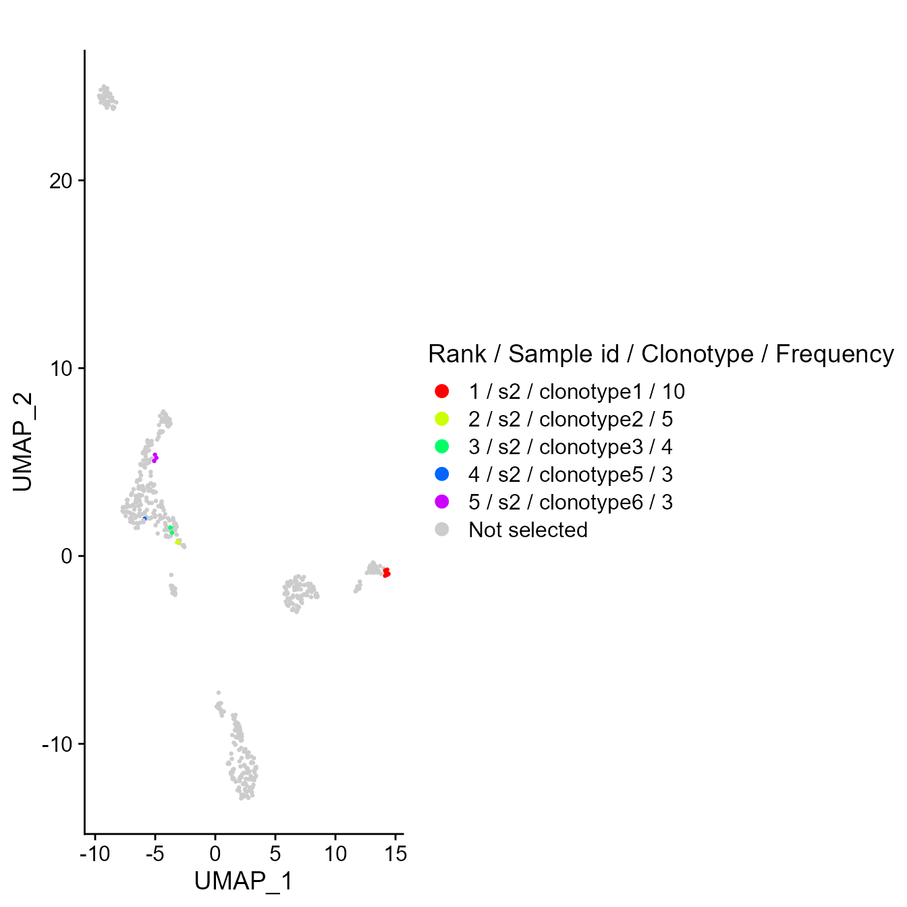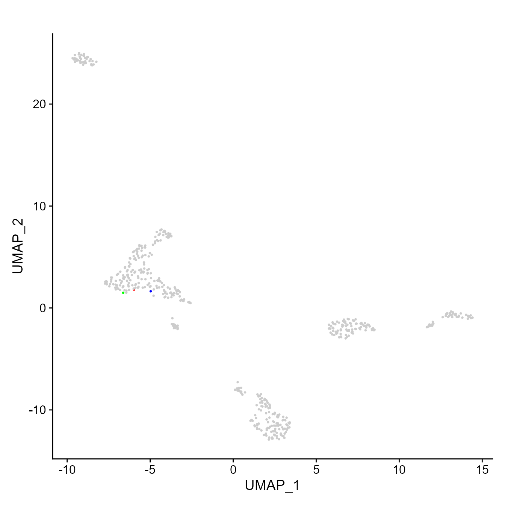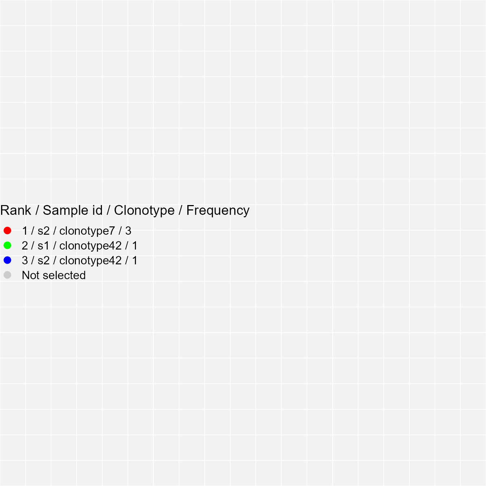
8.4 Specific gene expression information on the clonal level
We previously integrated the GEX information into the format of the VDJ output. However, we may want to ask how the gene expression looks for certain clonotypes (e.g., how many of the cells in the top clone are expressing markers of activated B cells). This is done by adding an extra column to the expanded clones and examining transcritional differences to cells of non expanded clones
vgm[[2]]$Expanded <- FALSE
vgm[[2]]$Expanded[which(vgm[[2]]$clonotype_frequency > 1)] <- TRUE
table(vgm[[2]]$Expanded)##
## FALSE TRUE
## 486 40
#We can use the dottile function to look at selected genes
GEX_dottile_plot(GEX = vgm[[2]], genes = c("CD19", "CD74","IL2RA", "CD27","CD80"), group.by = "Expanded", threshold.to.plot = 1) + ggplot2::theme(legend.position = "bottom")## Warning: Removed 2 rows containing missing values (geom_point).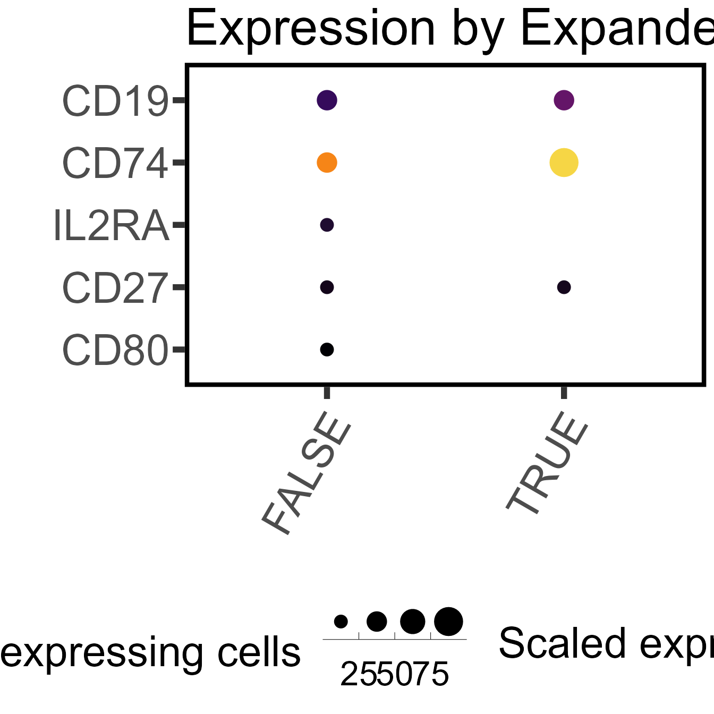
For a more unbiased view, DEGs can be calculated between expanded and non-expanded clones
DE_byexpansion <- GEX_DEgenes(GEX = vgm[[2]], min.pct = 0.25, group1 = "TRUE", group2 = "FALSE", grouping.column = "Expanded", return.plot = "volcano", label.n.top.genes = 10, platypus.version = "v3")
head(DE_byexpansion[[1]])## p_val avg_logFC pct.1 pct.2 p_val_adj SYMBOL
## MS4A1 8.918494e-11 1.786943 0.700 0.265 2.825468e-06 MS4A1
## H2-EB1 1.822507e-11 1.592366 0.850 0.323 5.773885e-07 H2-EB1
## LY6D 4.014885e-10 1.590404 0.800 0.342 1.271956e-05 LY6D
## H2-AB1 7.410844e-09 1.479968 0.750 0.344 2.347829e-04 H2-AB1
## APOBEC1 2.883062e-01 1.366705 0.250 0.216 1.000000e+00 APOBEC1
## CD79A 3.736469e-11 1.319440 0.925 0.436 1.183751e-06 CD79A
DE_byexpansion[[2]]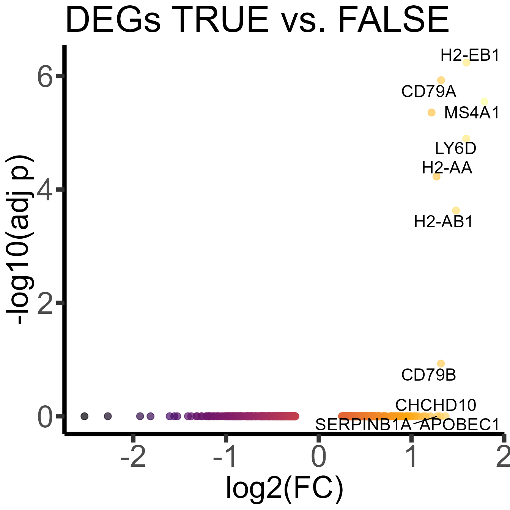
Indeed inflammation associated markers as well as MHC clomplex components are upregulated in expanded clones.
9 Version information
## R version 4.0.5 (2021-03-31)
## Platform: x86_64-w64-mingw32/x64 (64-bit)
## Running under: Windows 10 x64 (build 19042)
##
## Matrix products: default
##
## locale:
## [1] LC_COLLATE=German_Germany.1252 LC_CTYPE=German_Germany.1252
## [3] LC_MONETARY=German_Germany.1252 LC_NUMERIC=C
## [5] LC_TIME=German_Germany.1252
##
## attached base packages:
## [1] parallel stats graphics grDevices utils datasets methods
## [8] base
##
## other attached packages:
## [1] stringdist_0.9.6.3 dplyr_1.0.7
##
## loaded via a namespace (and not attached):
## [1] circlize_0.4.13 snow_0.4-3 fastmatch_1.1-0
## [4] systemfonts_1.0.2 plyr_1.8.6 igraph_1.2.6
## [7] lazyeval_0.2.2 splines_4.0.5 BiocParallel_1.24.1
## [10] listenv_0.8.0 scattermore_0.7 usethis_2.0.1
## [13] ggplot2_3.3.5 digest_0.6.27 htmltools_0.5.1.1
## [16] useful_1.2.6 GO.db_3.12.1 fansi_0.5.0
## [19] magrittr_2.0.1 memoise_2.0.0 tensor_1.5
## [22] cluster_2.1.2 ROCR_1.0-11 limma_3.46.0
## [25] Biostrings_2.58.0 globals_0.14.0 matrixStats_0.59.0
## [28] pkgdown_1.6.1.9001 spatstat.sparse_2.0-0 colorspace_2.0-2
## [31] blob_1.2.1 rvest_1.0.0 ggrepel_0.9.1
## [34] textshaping_0.3.5 xfun_0.24 crayon_1.4.1
## [37] jsonlite_1.7.2 Platypus_3.1 org.Mm.eg.db_3.12.0
## [40] spatstat.data_2.1-0 survival_3.2-11 zoo_1.8-9
## [43] glue_1.4.2 polyclip_1.10-0 gtable_0.3.0
## [46] zlibbioc_1.36.0 XVector_0.30.0 leiden_0.3.8
## [49] seqinr_4.2-8 do_1.8.0.0 shape_1.4.6
## [52] future.apply_1.7.0 BiocGenerics_0.36.0 abind_1.4-5
## [55] scales_1.1.1 pheatmap_1.0.12 DBI_1.1.1
## [58] miniUI_0.1.1.1 Rcpp_1.0.6 viridisLite_0.4.0
## [61] xtable_1.8-4 reticulate_1.20 spatstat.core_2.2-0
## [64] bit_4.0.4 stats4_4.0.5 htmlwidgets_1.5.3
## [67] httr_1.4.2 fgsea_1.16.0 RColorBrewer_1.1-2
## [70] ellipsis_0.3.2 Seurat_4.0.3 ica_1.0-2
## [73] pkgconfig_2.0.3 farver_2.1.0 ggseqlogo_0.1
## [76] sass_0.4.0 uwot_0.1.10 deldir_0.2-10
## [79] utf8_1.2.1 tidyselect_1.1.1 labeling_0.4.2
## [82] rlang_0.4.10 reshape2_1.4.4 later_1.2.0
## [85] AnnotationDbi_1.52.0 munsell_0.5.0 tools_4.0.5
## [88] cachem_1.0.5 cli_3.0.0 RSQLite_2.2.7
## [91] generics_0.1.0 ade4_1.7-17 ggridges_0.5.3
## [94] evaluate_0.14 stringr_1.4.0 fastmap_1.1.0
## [97] yaml_2.2.1 ragg_1.1.3 goftest_1.2-2
## [100] bit64_4.0.5 knitr_1.33 fs_1.5.0
## [103] fitdistrplus_1.1-5 purrr_0.3.4 RANN_2.6.1
## [106] pbapply_1.4-3 future_1.21.0 nlme_3.1-152
## [109] mime_0.11 xml2_1.3.2 rstudioapi_0.13
## [112] compiler_4.0.5 plotly_4.9.4.1 png_0.1-7
## [115] spatstat.utils_2.2-0 tibble_3.1.2 bslib_0.2.5.1
## [118] stringi_1.6.2 highr_0.9 desc_1.3.0
## [121] RSpectra_0.16-0 lattice_0.20-44 Matrix_1.3-4
## [124] permute_0.9-5 vegan_2.5-7 vctrs_0.3.8
## [127] pillar_1.6.1 lifecycle_1.0.0 GlobalOptions_0.1.2
## [130] spatstat.geom_2.2-0 lmtest_0.9-38 jquerylib_0.1.4
## [133] RcppAnnoy_0.0.18 data.table_1.14.0 cowplot_1.1.1
## [136] irlba_2.3.3 httpuv_1.6.1 patchwork_1.1.1
## [139] R6_2.5.0 promises_1.2.0.1 KernSmooth_2.23-20
## [142] gridExtra_2.3 IRanges_2.24.1 parallelly_1.26.1
## [145] codetools_0.2-18 MASS_7.3-54 assertthat_0.2.1
## [148] rprojroot_2.0.2 withr_2.4.2 SeuratObject_4.0.2
## [151] sctransform_0.3.2 S4Vectors_0.28.1 mgcv_1.8-36
## [154] grid_4.0.5 rpart_4.1-15 tidyr_1.1.3
## [157] rmarkdown_2.9 Rtsne_0.15 Biobase_2.50.0
## [160] shiny_1.6.0